圖4.1 太陽幅射的波長分布。 (參考國家度量衡實驗室網頁整理重繪)

第一節 環境控制的理論基礎
本節前半段敘述光、輻射與日出方程式，後半段則使用濕空氣線圖，敘述溫度、濕度及空氣循環。特別以環境因子間的相互關係為焦點，並針對常用的溫室環控設備敘其物理意義。
一、光與輻射
太陽光以放射出多種不同波長的混合
電磁波形式傳遞至地球，其波長分布如圖 4.1所示。圖中波長的單位為nm，1nm=109 m。太陽輻射的波長介於280～3,000nm之間，280～380nm短波長的太陽輻射稱為紫外線 (ultraviolet)，此種輻射導致日曬效果。780～3,000nm長波長的太陽輻射稱為紅外線，此為太陽熱效應的主要因素。
於紫外線與紅外線之間的波長區域380～ 780nm，為人類可目視的輻射，稱為可見光。可見光由波長區域380～780nm的光譜構成。當光線穿透三稜鏡時，可散射出顏色光。
人眼對不同色光有不同的感知度，可依下列簡單方法加以試驗：首先在陰暗櫥櫃中放置五張色紙 (黃、紅、綠、藍、紫)；然後緩慢關閉櫥櫃的門，並持續凝視色紙。不久後眼睛對紅、藍、紫等色紙即無法辨別，但仍可見綠色紙與黃色紙。因此國際照明委員會 (International Commission on Illumination, CIE) 依據實驗結果，將各種波長的光引起明暗感覺所需的輻射通量進行比較，確立了人眼對各種波長光的平均
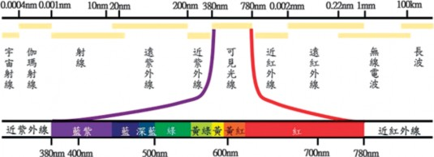
相對靈敏度，即相對感度或視見函數。在較明亮環境中人的視覺對波長為555.016nm的綠色光最為敏感；而480nm藍光的視見函數則為V(480nm)=1mW/7.2mW=0.139，如圖 4.2所示。
植物在生長過程中需要利用光的能
量，製造養分與維持生理機能，基本上對於植物有效輻射中，可分為生理有效輻射 (300～800nm) 與光合作用有效輻射 (PAR： 400～700nm) 兩種。光合作用有效輻射 (PAR)，作為光合作用中提供CO2與水轉換成糖類所需要的能量源，需要較強光強
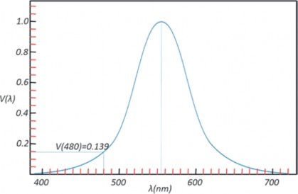
圖4.2 人眼的相對感度 (視見函數)。 (參考國家度量衡實驗室網頁整理重繪)
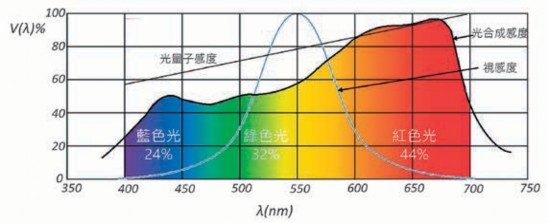
圖4.3 植物的光合作用曲線。 (參考網頁資料1整理重繪)

度。生理有效輻射，主要對於色素合成、光周期性、趨光性、形態形成等等生理方面具有效果。
光合作用所需光的波長範圍與可見光的波長範圍類似。植物進行光合作用時，在PAR輻射波長中並非以相同效率進行。如同人們的眼睛有相對感度，植物也有類似的感度曲線如圖4.3所示，在紅色光 (625～675nm) 有最大的峰值，在藍色光 (440～450nm) 則有次大峰值。
（一） 光強度的單位與轉換
光源種類 | Wm-2→μmol m-2s-1 | klux→μmol m-2s-1 |
日光燈 | 5.61 | 13.65 |
鹵素燈 | 0.63 | 19.08 |
偏紅植物燈管 | 5.30 | 27.87 |
白光LED | 5.83 | 15.29 |
量測光強度常使用輻射量 (radiometric； Wm-2)、照度 (photometric；lux) 與光量子通量密度 (photosynthetic photon flux density, PPFD；μmol m-2 s-1) 三種單位。輻射量主要針對波長範圍280～3,800nm的光能量進
行量測，其量測值常應用於溫室內熱量收支運算及相關環控設備運作的參考基準。照度量測值相當人於類眼睛感度的光。故主要量測黃色及綠色，及某程度的藍色與紅色光，其量測波長範圍為380～760nm，為傳統園藝栽培業者及建築照明設計所使用單位。光量子通量密度對應於植物的相對感度，主要量測紅色光，另外也量測部分黃色、綠色或藍色光，其量測波長範圍為400～700nm，1982年美國農業工程學會將其定為農業量測光強度基準。由於太陽光有固定頻譜，因此三種量測值可依一定比例換算，有些儀器上可直接用模式選擇的方式，選擇適用單位，但這只限於太陽光或儀器所指定的人工光源，針對特定光源三種單位轉換係數的參考值如表4.1所示 (姚，2011與陳，2008)。雖然不同燈具的轉
表4.1 不同燈具各單位間的轉換係數 | |||
太陽光 | 4.5 | 18 | |
省電燈泡 | 5.80 | 14.33 | |
植物燈管 | 4.82 | 23.23 | |
偏藍植物燈管 | 5.08 | 24.27 | |
紅光LED | 5.22 | 84.71 | |
藍光LED | 7.01 | 52.72 | |
換係數已有研究人員協助測量計算，但照明技術的日新月異，新型燈具不斷推陳出新，且燈具使用年限及量測環境皆會影響轉換係數，因此，若要精確數據，仍要以適當量測設備直接量測為佳。
【例題】
有一照度計於太陽光下量測的照度為
500lux，試求：
等於多少μmol m-2 s-1？
等於多少Wm-2
【解答】
500lux 等於0.5klux ，查表4.1 可得 klux→μmol m-2 s-1轉換係數為18代表
反射率 (reflection factor)，因此反射率ρ可表示如下：
(4.1)
It Iin
ρ =
反射特性與平面性質有關，當光入射至光滑平面時，其反射光只有一個方向，稱為正反射，當光入射至粗糙面時，其反射光的方向不一致，稱為漫反射。反射率可使用光強度感測器量測該平面上入射光強度Iin，隨後將該感測器反向使感光元件距欲測之平面5～8cm，測出平面上反射光強度Ir，代入4.1式，即可計算出反射率。
光穿透過某物體後繼續前進稱為透射，物體具有可透射光線的能力稱為透光
1klux=18μmol m-2 s-1，故0.5klux=μmol
性。某介質透射光It與入射光Iin的比值稱為
m-2 s-1 。
由(1)可知，500lux=9μmol m-2 s-1，查表
4.1 可得Wm-2→μmol m-2 s-1轉換係數為
4.5，9μmol m-2 s-1=9.065÷4.5=2 Wm-2
（二） 光的反射 (reflection)、透射
(transmission) 與吸收 (absorption)
一般人眼中所看到的物體，其實是該物所反射的光在人眼視網膜上成像所致，換言之，若光不存在，物體就無法反射光，因此在黑暗中人眼無法看見物體。在某平面上反射光Ir與入射光Iin的比值稱為
透射率 (transmission factor)，因此透射率τ可表示如4-2式：
(4.2)
It Iin
τ =
當光觸及表面或介質， 不是被反射即是透射，且多少會損失一些光，即被表面或介質所吸收，使得被照物溫度上升。通常深色表面比淺色表面吸收更多的光，霧面黑體提供接近完全的吸收。該表面或介質吸收光與入射光的比值，稱為吸收率 (absorption factor)，以α表示之，一般而言，
圖4.4 透明被覆材光學特性示意圖。 (參考Cecilia et al., 2019整理重繪)

146
反射率、透射率與吸收率的和應等於1。 介質對不同波長光線具有不同光學特
性，而呈現出不同顏色，若是透明介質，則由透射光決定，例如：以白光照射紅玻璃紙，紅光可透過，故呈現紅色，若以綠光LED照射紅玻璃紙，因綠光被吸收，而無紅光可透射故呈黑色；若是不透明介
覆材使光線透過，當光線透過被覆材時，亦會產生反射、吸收與透射，如圖4.4所示，當太陽輻射Isun接觸被覆材外表面時，部分光線被反射Ireflected=ρIsun，進入被覆材的光線會被吸收，其吸收程度與材質的消光係數 (extinction coefficient) 和厚度有關，直射進入厚度為d、消光係數為k的被覆材的
質，則反射色光就是該介質顏色，例如：
光線，會有透射光I
transmitted
=(1-ρ)e-kdI
sun，故
紅蘋果會吸收紅色以外其他色光，反射紅光，故用藍色LED照射蘋果，因無紅光可反射，故蘋果呈現黑色；黑色介質能將入射的各種色光全部吸收，因此即使是在白光照射下，這種介質不會將任何一種色光反射透射，故呈現黑色；而白色不透明介質則可將大部分的色光反射，故呈現白色。
溫室主要是應用於作物栽培，作物生長需進行光合作用，故需利用透光性的被
可定義光線透射率 (transmission)τ=(1-ρ)e-kd。當光線非以垂直方式入射至被覆材料
時，因d值變大，而造成kd值變大，e-kd變小，光線傳遞率τ也隨之變小，圖4.5為玻璃與乙烯薄膜在不同入射角下的光線透射率，由圖中可發現，當入射角在50度以內時，光線透射率變化不大，當入射角大於 60度時，則產生急劇變化，而目前材料的光線透射率主要是以光線正交入射至被覆
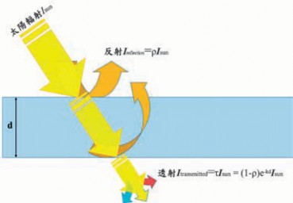
材作為量測依據，但在實際應用時，光線正交直射進入被覆材的機率少之又少，而且透射進入溫室中的光線並非僅受到被覆遮蔽，同時也受到溫室結構遮擋，依照設施結構的不同，光線透過率也不同，故傳統材質表中所列光線透射率皆有高估的情況。
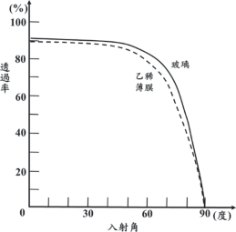
圖4.5 不同入射角對光線透射率的影響。 (參考三原，1972整理重繪)
（三） 太陽方程式
地球以橢圓形軌道繞著太陽，以一年為一週期的公轉，同時又以與這個公轉面法線呈23.45°傾斜的地軸為中心，以一天為一個週期的自轉。若以地球上某個位置做
為觀測點，則可將太陽、月亮與星座視為以一天為一個週期在天球上移動，形成日升、日落的現象，圖4.6說明這個天球與夏至、冬至、春秋分的太陽軌道，圖 4.6(a)為其斷面、圖 4.6(b) 則為斜視圖。圖中通過觀測點O，與地平面垂直的直線和天球交錯的上方點Z叫做天頂、下方的點叫做天底；PN和PS稱為北極和南極，子午線為通過PN、PS和地平面上南點S的圓弧線，當太陽橫貫子午線時稱為南中，此時太陽的高度為當日最高。在地球上的任一地點，以太陽實際橫貫兩次南中時的時間間隔為一天，稱為真太陽時 (true solar time) 或視太陽時 (apparent solar time)，因為地球公轉軌道並非圓形，故此時間間隔會隨日子而不同。每日時間長短不同，會對生活造成不便，因此假設以該年平均值24小時做為一天進行運轉的平均太陽時 (mean solar time)。
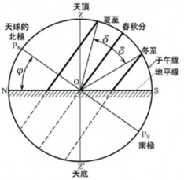
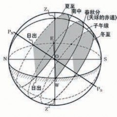
(a) (b)
圖4.6 太陽運行軌道。 (參考田中等人，2004整理重繪)

(4.3)
E = 9.87 sin( 2B) − 7.53 cos( B)
− 1.5sin ( B)
平均太陽時與真太陽時每年有四次是一致的，其餘皆會有誤差，這個時間差就稱為均時差。均時差是由週期各為一年與六個月的2個正弦曲線疊加而成，它可以用近似的算式表達：
Tt=TC [時]±(L-LC)×4[分]±E[分] (4.4)
此處E以分為單位，式中B = D− 81 ×360 °
對一個橫跨多個經度的國家或地方，不同位置就會有不同時間依據，造成同一國內各地區時間不同，因此，每一個國家會訂定一個代表性的平均太陽時，稱為中央標準時。即為一般鐘錶顯示的時間。中華民國是以東經120°做為中央標準時的基點。以格林威治子午線為基準，由於地球自轉，經度與經度之間每度相差4分鐘，因此某地的真太陽時可由下式算出：
365
，
月
D為自1月1日算起的累積日數，例如：1
2日時，D為2。
【例題】
試計算7月1日的均時差為何？在東經
120為觀測點時，太陽過中天的時刻為何？
【解答】
日期為7月1日，可計算D為182，代
入B的公式： B = D− 81 ×360 ° ，可計算
其中Tt為位於經度L觀測點的真太陽時、TC為該觀測點的中央標準時， 東經取-、西經取+、LC為該觀測點所屬中央標準時基點的經度、E為均時差。
【例題】
試計算台中2019年7月1日時，太陽達到最高點 (正午) 的時間為何？
B=99.6°，將B值代入公式 ：
365
4-3
E=9.87 sin(199.2°)−7.53 cos(99.6°)− 1.5sin(99.6°)
可得E=-3.26−(-1.125)−1.48=-3.615分
=-3分37秒。
故太陽過中天的時刻為12時3分37秒。
【解答】
365
日期為7月1日，可計算D為182，代入B的公式： B = D− 81 ×360 ° ，可計算
B=99.6°，將B值代入均時差公式： E=9.87 sin(2B)−7.53 cos(B)−1.5sin(B)
可得E=-3.26−(-1.125)−1.48=-3.615分
=-3分37秒。
故在東經120度太陽過中天的時刻為12時3分37秒。
台中氣象觀測站位於東經120.684°，北緯24.146°，需對經度做修正，
Tt=12時3分37秒−(120.684−120)×4[分] Tt=12時3分37秒−2.736分
Tt=12時3分37秒−2.736分
Tt=12時0分53秒
太陽入射角與地球赤道的夾角稱為太陽赤緯，以δ表示，一年當中太陽赤緯都在 23.45°到冬至-23.45°間來回變化。太陽赤緯可由庫珀方程式求出：

δ = 23 .45 sin 360 ×
(
284 + D
365
)
(4.5)
式中， D為自1 月1 日算起的累積日數，例如：1月2日，D為2。表4.2列出各月每隔4日的太陽赤緯。
太陽的時角用ω表示，在正午 (太陽到達最高點) 時ω=0，每隔1小時增減15°，上午為正，下午為負。
表 4.2 太 陽 赤 緯 單 位 ：(°)
月 份 日 期 | 1 | 5 | 9 | 13 | 17 | 21 | 25 | 29 |
1 | -23.1 | -22.7 | -22.2 | -21.6 | -20.9 | -20.1 | -19.2 | -13.2 |
2 | -17.2 | -16.2 | -14.9 | -13.6 | -12.3 | -10.9 | -9.4 | |
3 | -7.9 | -6.4 | -4.8 | -3.3 | -1.7 | -0.1 | 1.5 | 3.0 |
4 | 4.2 | 5.8 | 7.3 | 8.7 | 10.2 | 11.6 | 12.9 | 14.2 |
5 | 14.8 | 16.0 | 17.1 | 18.2 | 19.1 | 20.0 | 20.8 | 21.5 |
7 | 23.2 | 22.9 | 22.5 | 21.9 | 21.3 | 20.6 | 19.8 | 19.0 |
8 | 18.2 | 17.2 | 16.1 | 14.9 | 13.7 | 12.4 | 11.1 | 9.7 |
9 | 8.6 | 7.1 | 5.6 | 4.1 | 2.6 | 1.0 | -0.5 | -2.1 |
10 | -2.9 | -4.4 | -5.9 | -7.5 | -8.9 | -10.4 | -11.8 | -13.2 |
11 | -14.2 | -15.4 | -16.6 | -17.7 | -8.9 | -10.4 | -11.8 | -13.2 |
12 | -21.7 | -22.3 | -22.7 | -23.1 | -23.3 | -23.4 | -23.4 | -23.3 |

【例題】
已知正午為12時，請計算8時、11時、
13時和15時的時角各為何？
【解答】
8時的時角：(12−8)×15=60度
11時的時角：(12−11)×15=15度
13時的時角：(12−13)×15=-15度
15時的時角：(12−15)×15=-45度
如圖4.7所示，太陽直射至觀測點的向量與水平面夾角稱為太陽高度角 (h)，太陽高度角可由下式加以計算：
sinh=sinφ sinδ+cosφ cosδ cosω (4.6)
式中 φ為觀測點所處緯度；δ為太陽赤緯；ω為太陽時角。
在日出或日落時，h=0，故可得
0=sinφ sinδ+cosφ cosδ cosω (4.7)
移項整理後可得日出和日沒時角的cos
(4.8)
cos φ cos δ
cosω = - sin φ sin δ = - tan φ tan δ
值為
因此可得日出和日落的時角
ω=cos-1(-tanφ tanδ) (4.9)
15 15
W
T = = 1 cos- 1 ( − tanφ tanδ ) (4.10)
因時角每隔1小時增減15°，故可推算得日出與日落和正午的時間差為
而一天中可能日照時間則為2 倍的
TW。
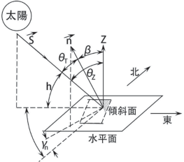
圖4.7 太陽方位與高度示意圖。 (參考沈與曾， 2008整理重繪)
【例題】
試計算台中2019年7月1日，日出與日落時間為何？
【解答】
查表4.2可得7月1日赤緯為23.2度，台中緯度為北緯24.146度，日出與日落和正午的時間差為
氮氣及其他氣體) 與水蒸氣等兩部分構成，由道爾頓分壓定律 (Dalton’s law) 可知：兩種以上的氣體，在溫度不變狀態下混合，則混合後的總壓力等於混合前各個氣體單
1
TW = 15
cos- 1 (- tanφ
tanδ )
獨壓力的總和。因此，大氣壓力 (Pt) 可表示為乾空氣分壓與水蒸氣分壓之和。
1

TW = 15
cos- 1 (- 0.448 × 0.429)
P = P + P
T = 1 cos- 1 (- 0.192192 )

t dry air
water vapour
W 15
TW
1

= 15
× 101 .08
在特定溫度的濕空氣中，水蒸氣含量
達到飽和時的蒸氣壓，即為該溫度的飽和
TW = 6.74 小時= 6小時 44 分 24 秒
太陽達到最高點 (正午) 的時刻為12時 0分53秒，故日落時刻為18時45分27秒，日出時刻為5時16分29秒。
二、空氣
空氣為由永久氣體、變動氣體和懸
浮微粒所組成的混合物。永久氣體是指該氣體的量不隨季節、氣候而變動，例如：氧、氮、氬等；變動氣體則其在空氣中的含量會隨季節、氣候、人類活動與生產方式而發生變化，包含水蒸氣、二氧化碳、甲烷與臭氧等氣體，其中二氧化碳約占 0.03～0.04％，水蒸氣則占0.01～4％，雖然水蒸氣含量不高，但卻大大地影響了空氣的熱力性質，因此常將空氣定義為濕空氣，並且由「乾空氣」(氧氣、二氧化碳、
水蒸氣壓，此時水蒸氣凝結成水滴的速度與水滴蒸發為水蒸氣的速度相等，形成一個動態平衡。飽和水蒸氣壓隨溫度上升而增高，當溫度上升到100℃時，飽和水蒸氣壓等於外界大氣壓力，一般常溫下，大氣壓中水蒸氣分壓所占比例甚低。不同溫度下，飽和水蒸氣分壓如表4.3所示。

P = 0.6105 exp
s
(
17.27T
237.3+T
)
(4.11)
若需不同溫度的飽和水蒸氣壓， 可用Raudkivi (1979) 建議的經驗公式加以計算，其公式如下：
公式中溫度T的單位為℃，蒸氣壓單位為kPa。

表4.3 不同溫度下飽和水蒸氣分壓
溫度 (℃) | 飽和水蒸氣分壓 (kPa) | 溫度 (℃) | 飽和水蒸氣分壓 (kPa) |
-13 | 0.2254 | 20 | 2.337 |
-10 | 0.3865 | 23 | 2.808 |
-7 | 0.3619 | 27 | 3.564 |
-3 | 0.4896 | 30 | 4.242 |
0 | 0.6104 | 33 | 5.029 |
3 | 0.7578 | 37 | 6.274 |
7 | 1.001 | 40 | 7.378 |
10 | 1.228 | 43 | 8.638 |
13 | 1.497 | 47 | 10.610 |
17 | 1.937 | 50 | 12.330 |
【例題】
試以公式4.11計算100℃濕空氣飽和水蒸氣壓之值為何？與真實100℃濕空氣飽和水蒸氣壓的誤差為何？
【解答】
將100℃代入公式 (4.11) 中，計算可得
17.27×100
= 101.325 − 102 .16 × 100 ％
誤差
101 .325
誤差=0.82％
（一） 絕對濕度 (x, absolute humidity)
與飽和水蒸氣量 (SMC)
空氣中所含水蒸氣質量與乾空氣質量的比值， 稱為絕對濕度，單位為k g /
Ps = 0.6105 exp (
)
237.3+100
kg(DA)，因空氣中所含的水蒸氣量相當
( )
1727
s
P = 0.6105 exp
337.3
少，以kg/kg(DA)為單位，其數值會有許多
Ps = 0.6105 exp ( 5.12)
Ps = 0.6105 exp ( 5.12) Ps = 102 .16 ( kPa)
當溫度上升到100℃時，飽和水蒸氣壓等於外界大氣壓力，故在100℃時真實的飽和水蒸氣壓應為101.325kPa，
小數點，故將其單位更改為g/kg(DA)，以利閱讀。圖4.8為絕對濕度的示意圖，以方框代表1kg乾空氣，實心水滴代表1g水蒸氣，左圖代表絕對濕度為12g/kg(DA)，右圖則代表4g/kg(DA)。
假設乾空氣與水蒸氣皆為理想氣體，由理想氣體方程式PV=nRT可推導為
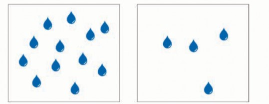
圖4.8 絕對濕度的示意圖。 (參考Kamp et al., 1996整理重繪)
PV=(m/M)RT，m=(PVM)/(RT) mw=(PwV×18.015)/(8.314×T)
ma=((Pt-Pw)V×28.97)/(8.314×T)
x=mw/ma=(18.015/28.97)(Pw/(Pt-Pw)) x=0.622(Pw/(Pt-Pw)) (4.12)
下降，飽和水蒸氣量跟著下降，多餘水蒸氣凝結成霧滴。表4.4為不同溫度的飽和水蒸氣量。
飽和水蒸氣量與絕對濕度的關係可由
表4.4 不同溫度的飽和水蒸氣量
乾球溫度 (℃)
飽和水蒸氣量 (g/kgDA)
5.0 | 5.4 |
7.5 | 6.4 |
10.0 | 7.6 |
12.5 | 9.0 |
15.0 | 10.6 |
17.5 | 12.5 |
20.0 | 14.7 |
22.5 | 17.2 |
25.0 | 20.1 |
27.5 | 23.4 |
30.0 | 27.2 |
32.5 | 31.6 |
35.0 | 36.6 |
37.5 | 42.3 |
40.0 | 48.9 |
將公式4.12的水蒸氣分壓以飽和水蒸氣壓代入，可計算在某溫度下空氣所能含有最多的水蒸氣量，稱為飽和水蒸氣量 (SMC)。
S
t
S
即SMC=0.622(P /(P -P ))，將表4.3中
不同溫度下飽和水蒸氣分壓代入公式4.12中可發現，空氣中的飽和水蒸氣量隨溫度上升而增加。當溫度下降時，空氣中的飽和水蒸氣量下降，多餘水蒸氣凝結成液態水形成霧滴。此現象可在冬天時對空中呼氣觀察得之，因呼出的氣體溫度和含水量較高，當呼出氣體接觸冷空氣時，因溫度
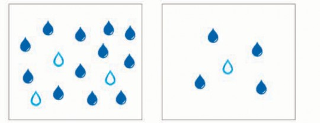
圖4.9 飽和水蒸氣量與絕對濕度關係的示意圖。 (參考Kamp et al., 1996整理重繪)
圖4.9加以說明，水滴形代表可容納1g水蒸氣，實心代表已裝滿1g水蒸氣，空心代表有1g空間可容納水蒸氣。
空心加實心水滴形數量代表飽和水蒸氣量，實心水滴形代表絕對濕度。故圖4.4左圖代表飽和水蒸氣量為15g/kg(DA)，絕對濕度為12g/kg(DA)；右圖代表飽和水蒸氣量為5g/kg(DA)，絕對濕度為4g/kg(DA)。
（二） 相對濕度 (relative humidity, RH)
相對濕度為單位體積空氣中，實際水蒸氣分壓與相同溫度下飽和水蒸氣壓的百分比。可表示為：

RH = Pw × 100% PS
將公式4.12代入，可得
t
S
RH = x ( Pt − Pw ) × 100% SMC ( P − P )
由於在常溫範圍內，PS和Pw相對於Pt其值非常的小，故可將RH公式簡化為絕對濕度和飽和水蒸氣量的比值，即：

(4.13)
SMC
RH = x × 100%
相對濕度以百分比表示，在某些情況下可能導致混淆。例如：假設外氣相對濕度80％，溫室內相對濕度為40％時， 換氣後溫室內空氣是否變潮濕？大部分情況為「是」。但有時卻會出現「否」的情況。以圖4 . 10 加以說明， 左圖為溫室狀態 (x=6g/kgDA、SMC=15g/kgDA、 DBT為20℃、RH=40％)，右圖表示外氣狀態 (x=4g/kgDA、SMC=5g/kgDA、DBT為4℃、RH=80％)。因換氣產內外空氣交換後，溫室內空氣去除3g水蒸氣，而從外氣獲得2g水蒸氣。狀態變為中圖 (x=5g/
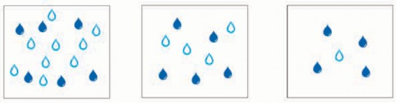
圖4.10 相對濕度高低是否代表乾燥的說明示意。 (參考Kamp et al., 1996整理重繪)
kgDA、SMC=9g/kgDA、DBT為12.5℃、 RH=55.6％)，因空氣絕對濕度變少，故空氣變得較為乾燥。
（三） 乾球溫度、濕球溫度與露點溫度
乾球溫度
在不受周圍輻射熱影響的環境狀態
下，溫度計乾燥感溫部所測得的溫度，即一般所稱的溫度，單位為℃。
濕球溫度
在某一空氣狀態下，不斷提供水分，
因空氣熱源提供給水蒸發使用，導致濕空氣溫度下降可達的極限值，當此極限值產生時，空氣中可容納水蒸氣已達最大，即處於相對濕度100％的飽和狀況。由於水蒸發，兩者最終達到飽和狀態時需經過相當長的時間，在時效上較差，故均採用如圖 4.11所示濕球溫度計 (psychrometer) 加以量測。濕球溫度計係在普通溫度計感溫處覆以棉紗布，並將布一端浸濕，由溫度計上
所指示的溫度讀數，即為濕球溫度 (Twb)。此時濕空氣通過濕紗布面的風速至少應在 2m/s～3m/s區間，所得數值方算準確。
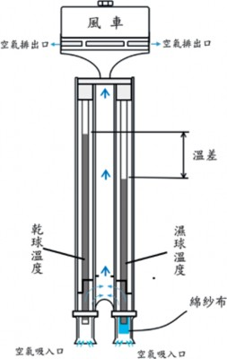
圖4.11 乾濕球溫度計。 (參考簡與簡，2019整理重繪)
露點溫度
在某一空氣狀態下， 使濕空氣溫度
降低，空氣所能含有水蒸氣量也隨著減少，當空氣中所含水蒸氣量到達飽和，開始出現水滴凝結時的溫度即為露點溫度。圖4.12可說明空氣降溫過程水蒸氣凝結的狀況。左圖為空氣初始狀態25℃、x=15g/ kg (DA)、SMC=20g/kg (DA)，開始降溫且降溫過程中無水分進出空氣，中圖為空氣降溫至20℃，此時SMC=15g/kg (DA)，絕對濕度維持在15g/kg (DA)，空氣中已無法再容納更多的水蒸氣，只要溫度再降低， SMC值會下降，多餘的蒸氣就會開始凝結為水滴，因此20℃即為左圖空氣狀態的露點溫度。當溫度繼降低至17℃時， SMC=12g/kg (DA)，會有3g水蒸氣凝結，如右圖所示。
（四） 比容與密度
流體每單位質量占有的體積，稱為比容，單位為m3/kg；流體每單位體積含有水蒸氣質量，稱為密度，其單位為kg/m3；乾空氣在一大氣壓力下20℃時，其比容為 0.83m3/kg，密度為1.205kg/m3。兩者互為倒數。在標準一大氣壓時乾空氣的密度與溫度的關係如表4.5所示。由表中可知，乾空氣的密度與其他物質相同，會隨著溫度上升而變小。
乾空氣分子量約為28.96kg/kmol，水蒸氣分子量約為18.02kg/kmol。水蒸氣量變多，比容則會增加，密度會變小。因此，濕空氣的比容會依水蒸氣量而變化，濕空氣的比容可由下列的方程式求出：
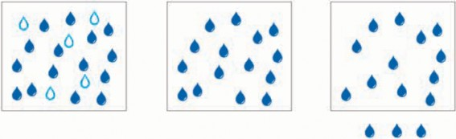
圖4.12 露點溫度與空氣水蒸氣凝結成霧滴的示意圖。 (參考Kamp et al., 1996整理重繪)
(4.14)
1000
x
v = 0.004555 × ( 0.622 + ) × ( 273 .15 + T )
v：比容 (m3/kg) x：絕對濕度 (g/kgDA) T：乾球溫度 (℃)
表4.5 標準一大氣壓時，乾空氣比容、密度與溫度的關係
溫度℃ | 比容m3/kg | 密度kg/m3 | 溫度℃ | 比容m3/kg | 密度kg/m3 |
0 | 0.773 | 1.293 | 40 | 0.887 | 1.127 |
5 | 0.787 | 1.270 | 45 | 0.901 | 1.110 |
10 | 0.802 | 1.247 | 50 | 0.916 | 1.092 |
15 | 0.816 | 1.225 | 55 | 0.929 | 1.076 |
20 | 0.830 | 1.205 | 60 | 0.943 | 1.060 |
25 | 0.845 | 1.184 | 65 | 0.958 | 1.044 |
30 | 0.856 | 1.168 | 70 | 0.972 | 1.029 |
35 | 0.873 | 1.146 | 75 | 0.986 | 1.014 |
【例題】
有一空氣其乾球溫度為30.0℃，相對濕度為60％，試求其比容為多少？
【解答】
由表4.4可知，30.0℃的飽和水蒸氣量為27.2g/kg(DA)，將相對濕度60％與飽和水蒸氣量代入公式4.13可得此時絕對濕度為 27.2×0.6=16.3(g/kgDA)
將乾球溫度與絕對濕度代入公式4.14中，可計算
( )
v = 0.004555 × 0.622 + 16 .3 × ( 273 .15 + 30 )
1000
v = 0.004555 × ( 0.6383 ) × ( 303 .15 )
v = 0.881 (m3/kg)
查表4.5可知，標準一大氣壓、30℃時，乾空氣的比容為0.856m3/kg，由此例可證明水蒸氣量增加，會使得空氣中的比容變大。
使1kg水蒸發必須提供2,500kJ的熱。水變化

（五） 比熱與焓
使1kg重的物質溫度升高或降低1℃，所需加給或排除的熱量稱為比熱，單位為 kJ/(kg℃)。不同物體的比熱皆不相同，固體和液體比熱不因熱在轉移的過程中條件不同而改變，但氣體比熱在熱轉移過程中，會因為是在固定壓力下，或是固定體積下而分為定壓比熱或者定容比熱，一般而言，氣體定壓比熱值較大，乾空氣的二種比熱如下所示：
【例題】
有一濕空氣乾球溫度為25℃，相對濕度為75％，試求該空氣的定壓比熱與定容比熱各為何？
【解答】
查表4.4可得25℃濕空氣的飽和水蒸氣量 (SMC) 為20g/kg(DA)，相對濕度為 75％，代入公式 (4.13) 可得
75 ％ = x × 100%
定壓比熱 (C )=1.006 kJ/(kg℃ 。
SMC
pa
va
定容比熱 (C
)
)
)=0.718 kJ/(kg℃ 。
3 = x × 4
SMC
x = 0.75 ( SMC)
在濕空氣中，水蒸氣含量愈多，無論
是定壓比熱 (Cp) 或是定容比熱 (Cv)，其值
x = 15 (g/kgDA)
℃
Cp=Cpa+ X Cpw=1.006+0.015 × 1.864=1.034 kJ/(kg(DA) )
1000
Cv=Cva + X Cvw=0.718+0.015 × 1.385=0.739 kJ/(kg(DA)℃)
皆會變大。其計算式分別如下：
1000

(4.15)
1000
Cp=Cpa+ X Cpw
(4.16)
1000
Cv=Cva+ X Cvw
空氣熱量由乾燥空氣的熱量、水的蒸發潛熱與水蒸氣的熱量組成。常以0℃物體其參考熱量為0kJ，現以1.02kg乾球溫度
30℃、絕對濕度加以說明：
20g/kg(DA)
的濕空氣為例
式中x為絕對濕度，單位為g/kg(DA)； Cpw為水蒸氣的定壓比熱，其值為1.846kJ/ (kg℃)；Cvw為水蒸氣的定容比熱，其值為 1.385kJ/(kg℃)。
乾燥空氣的熱量
0℃乾燥空氣加熱至30℃，需要30×1×
1.006=30.18 kJ。此情況下可感覺到空氣變暖和，所供給的熱稱為乾空氣的顯熱。
水的蒸發潛熱
絕對濕度20g/kg(DA)=0.02kg/kg(DA)。
為水蒸氣後，溫度仍然維持為不變。因水蒸氣的溫度未上升，不能感覺到水蒸氣有變熱。故所供給的熱量稱為潛熱。0.02kg水蒸氣含有的潛熱為0.02×2500 = 50kJ。
水蒸氣的熱量
【例題】
有一濕空氣乾球溫度為25℃，相對濕度為75％，試求該濕空氣的焓為何？
x
h = Cpa × T + 1000 × ( 2500 + Cpw × T )
0℃、0.02kg水蒸氣加熱至30℃。需要
15
h = 1.006 × 25 + 1000
× ( 2500 + 1.846 × 25 )
30×0.02×1.864kJ=1.118kJ，可感知到水蒸氣變溫暖。所供給的熱稱為水蒸氣的顯熱。因此1.02kg乾球溫度30℃、絕對濕度 20g/kg(DA)的濕空氣其熱量為30.18+1.118+
50=81.298kJ，其中水蒸氣的顯熱僅占
％，相對其他熱量而言，比例非常小。 焓為單位質量物質中所含有的熱量，
而在濕空氣中，焓(h)指的是1kg乾空氣中所含有的能量，單位為kJ/kg(DA)。其計算公式如下：
h = 63 .4 kJ/kg(DA)
（六）濕空氣線圖 (psychrometric chart)
與其應用

pw
1000
pa
h = C × T + x × ( 2500 + C × T) (4.17)
h = ha + xhw
在特定大氣壓力下， 將空氣的熱力性質關係利用圖形方式呈現稱為濕空氣線圖，簡稱濕氣圖 (psychrometric chart)。利用此圖除了可迅速查詢某空氣狀態的熱力性質外，亦可說明日射加熱、加溫、換氣、蒸發冷卻或植物蒸散等現象對空氣狀態的影響。圖4.13為大氣壓力101.325kPa
濕空氣線圖 (乾球溫度― 絕對濕度曲線
式中x為絕對濕度，單位為g/kg(DA)； Cpw為水蒸氣的定壓比熱，其值為1.846kJ/ (kg℃)；Cpa為乾空氣的定壓比熱，其值為 1.385kJ/(kg℃)；2500為水蒸發為氣體所需的潛熱，單位為kJ/kg；T為乾球溫度，單位為℃。
圖)。圖中絕對濕度常使用的單位為kg/
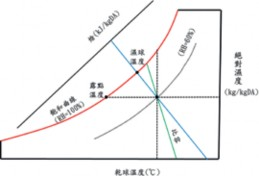
圖4.13 大氣壓力101.325kPa的濕空氣線圖。 (參考簡與簡，2019整理重繪)
的步驟
圖4.14 濕氣圖解析讀取絕對濕度與飽和水蒸氣量

kg(DA)，因查表獲得的數值過小，建議在實際運算時將數值乘上1,000倍，單位變為 g/kg(DA)。
此圖是以絕對濕度為垂直軸、乾球溫度為水平軸構成直角座標所繪製的曲線圖。圖中各線段說明如下：
右側垂直軸為絕對濕度，越上端表示空氣中所含水蒸氣量越多。
由左上向右下畫出等濕球溫度線與焓線，兩線重合，當0℃時的乾空氣焓h=0 kJ/kg(DA)。
飽和空氣係用以下垂曲線表示，此曲線的相對濕度為100％，以飽和曲線為基準，右方為不飽和濕空氣的等相對濕度曲線。
飽和曲線上與乾球溫度直線的交點，表示乾球溫度等於濕球溫度。
等比容曲線為向右下延伸的細線。
若已知其中二項性質的數值，則可由此二性質於濕空氣線圖上的交點，讀取其他性質。
【例題】
已知相對濕度 (RH) 為70％與絕對濕度 (x) 為20g/kg(DA)時，試利用濕空氣線圖讀取乾球溫度 (DBT) 及飽和水蒸氣量 (SMC) 各為何？
【解答】
步驟如圖4.14所示：
製作交點：(紅線)
由水平軸30℃的點往上繪製平行 Y軸的直線，標記此直線與相對濕度 70％曲線的交點。
讀取絕對濕度：(紅線)
由交點水平向右，讀取絕對濕度值 (0.0188 kg/kgDA)。
讀取飽和水蒸氣量：(藍線)
由交點將垂直線向上延伸至相對濕度100％曲線 (飽和曲線)。
由飽和曲線交點水平往右，讀取飽和水蒸氣量 (0.0272 kg/kgDA)。
30
乾球溫度 (℃)
0.0272
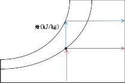
RH=70%
焓(kJ/kg)
絕對濕度(kg/kgDA)
0.0188
【例題】
已知相對濕度 (RH) 為70％與絕對濕度 (x) 為20g/kg(DA)時，試利用濕空氣線圖讀取乾球溫度 (DBT) 及飽和水蒸氣量 (SMC) 各為何？
【解答】
其讀取步驟如圖4.15所示：
決定交點：
由20g/kg(DA)=0.020kg/kg(DA)往左方描繪水平線。標記此線與相對濕度70％曲線的交點。
讀取數值：
由交點往下方平行移動，讀取氣溫 (31℃)。
讀取飽和水蒸氣量：(藍線)
由交點平行於Y軸，往上方移動至相對濕度100％的飽和曲線。
再自此交點水平往右，讀取飽和水蒸氣量 (0.0289kg/kgDA)。
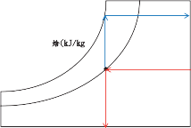
焓(kJ/kg)
絕對濕度(kg/kgDA)
【例題】
已知濕空氣的乾球溫度為30℃，相對濕度70％，試利用濕空氣線圖讀取露點溫度為何？濕球溫度為何？
【解答】
步驟如圖4.16所示：
製作交點：(紅線)
由水平軸30 ℃的點往上繪製平行Y軸直線，標記此直線與相對濕度 70％曲線的交點。
讀取露點溫度：(紅線)
由交點水平向左，找出與飽和曲線 (RH=100％) 的交點，讀取溫度
=23.9℃，此值即為露點溫度。
讀取濕球溫度：(藍線)
絕對濕度(kg/kgDA)
由交點沿著等濕球溫度線 (等焓線)，找出與飽和曲線的交點，讀取溫度=25.5℃，此值即為濕球溫度。
乾球溫度 (℃)
圖4.15 濕氣圖解析讀取乾球溫度與飽和水蒸氣量的步驟
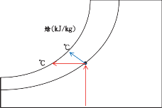
焓(kJ/kg)
乾球溫度 (℃)
圖4.16 濕氣圖解析讀取露點溫度與濕氣溫度的步驟

除了熱力性質的查詢外，亦可於濕空氣線圖中探討相關設備或現象對濕空氣所產生的變化，進而利用空調基本過程，達到空氣調節的目的。以下分為日射加熱、熱水管加溫、噴霧、風扇水牆、通風換氣、空調催花室與植物蒸散等項目加以說明。
日射加熱
在溫室中，陽光透射至室內，加熱室

絕對濕度(kg/kgDA)
內物體後，再藉由傳導、對流與輻射等方式對空氣加熱，使溫室內空氣的乾球溫度上升，可視為一個純加熱過程，在此過程中，因無水分蒸發為水蒸氣，故絕對濕度不變，而因乾球溫度上升，故飽和水蒸氣含量增加，相對濕度變小，濕球溫度亦增大。日照加熱造成濕空氣狀態變化的過程如圖4.17所示。
乾球溫度 (℃)
熱水管加溫
藉由熱水管的熱量，達到加溫效果，
在此過程中，因無水分蒸發為水蒸氣，故與日射加熱一樣可視為純加熱過程。於溫室中低位置處設置加溫熱水管。因濕暖空氣比乾冷空氣為輕，會產生垂直對流。作物群落內的濕空氣上升，置換為乾空氣。例如：設置於低位置熱水管溫度為20 ℃時。熱水管周圍空氣1m3的質量為1.2kg，溫室內空氣溫度亦為20℃時，因同重幾乎無空氣循環。熱水管加熱至35℃，熱水管周圍空氣1m3的質量降低為1.14kg。因使用加溫熱水管作物頂部溫度上升至21℃，熱水管周圍空氣 (1.14kg/m3) 上升到作物體上方，形成空氣循環。
通風換氣
溫室內空氣與外界空氣藉由自然通風
與強制通風不斷地產生交換。因換氣產生空氣的混合，形成新的空氣狀態。例如：外氣溫度30℃、相對濕度60％，溫室內溫度為36℃、相對濕度75％。求混合後新空氣的狀態 (參照圖4.18)。於濕氣圖上標記兩空氣的狀態，再以直線連接。則新空氣狀態將存在此直線上。若外氣與室內空氣以
圖4.17 日射加熱
1：1的比例混合，新空氣將位於線段中間。
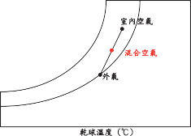
室內空氣
混合空氣
外氣
乾球溫度 (℃)
圖4.18 室內外空氣1：1混合
室內空氣與外氣混合比例為1：2時，此情況因外氣比例較多，混合後空氣的狀態將接近外氣狀態，在濕氣圖上可將直線分割為3等分 (1+2=3)，新混合點位於連接直線距離外氣狀態1/3等分的點上，如圖 4.19所示。
收集後再循環使用。藉由強力風扇運作使大量的空氣通過水牆，水牆內的水自空氣取得熱量產生蒸發，空氣中的顯熱，轉換為水蒸氣的潛熱。因此，通過水牆空氣的總熱量不變。進入溫室內的空氣，可感覺到溫度較低，並含有較多水蒸氣。利用此法降溫的最大極限為降至相同於外氣的濕球溫度。
絕對濕度(kg/kgDA)
例如：(圖4.20)
進入水牆為35℃、含20g/kg(DA)水蒸氣的空氣，則空氣的總熱量：
乾空氣的顯熱：35℃×1.00kg的乾空氣×1.00kJ=35.00kJ
水蒸氣的顯熱：35℃×0.02kg的水蒸氣×1.86kJ=1.302kJ
水蒸氣的顯熱： 0.02kg 的水蒸氣
×2500kJ=50.00kJ
總計：86.3kJ
自水牆進入溫室為30℃、含22g/kg(DA)
水蒸氣的空氣，則空氣的總熱量：
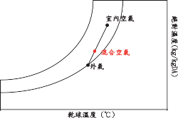
室內空氣
混合空氣
外氣
乾球溫度 (℃)
絕對濕度(kg/kgDA)
乾空氣的顯熱：30℃×1.00kg的乾燥空氣×
圖4.19 室內空氣與外氣混合比例為1：2
風扇水牆
蒸發冷卻法中，有使用風扇及水牆構
成的風扇水牆系統。水牆以多孔材質製成蜂窩狀構造，水由水牆上方流下，於底部
1.00kJ=30.00kJ
水蒸氣的顯熱：30℃×0.022kg的水蒸氣×1.86kJ =1.23kJ
水蒸氣的顯熱： 0.022kg 的水蒸氣
×2500kJ =55.00kJ
總計86.23kJ

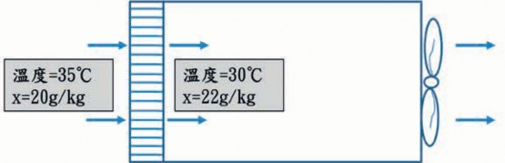
圖4.20 風扇水牆系統的示意圖

(4.18)
Tout− Twb
η = Tout−Tin × 100%
藉由上述計算可知，水牆冷卻主要是將空氣的顯熱轉移給水蒸氣的潛熱，水牆前後空氣的總熱量不變，空氣的狀態沿等焓線 (h線) 變化。圖4.21中表示水牆出入口的空氣狀態，兩點位於等焓線上。就理論而言水牆內側出口溫度，應等於外氣濕球溫度，但在實際上卻無法使出口的相對濕度達100％，故可定義水牆效率 (η) 如式 4.18所示。
式中Tout為水牆外側空氣的乾球溫度， Tin為水牆內側出口的乾球溫度，Twb為外側空氣的濕球溫度。
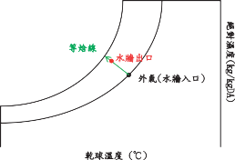
等焓線
水牆出口
外氣(水牆入口)
乾球溫度 (℃)
絕對濕度(kg/kgDA)
圖4.21 空氣通過水牆狀態變化的過程
噴霧
噴霧類似於風扇水牆系統， 為蒸發
冷卻過程的應用，過程中將乾空氣顯熱轉換為水蒸氣的潛熱。例如：於乾球溫度 35℃，相對濕度60％的溫室內噴霧，空氣水蒸氣壓為3.38kPa，噴霧時水溫假設為25℃，霧滴初始狀態亦為25℃， 表面的飽和水蒸氣壓為3.17kPa，小於空氣水蒸氣壓，此時霧滴無蒸發之現象，經過極短暫的時間，霧滴與空氣迅速混合進行熱
交換，此過程霧滴吸收空氣熱量，使霧滴溫度提升，但因此時空氣消耗的熱量並不多，故空氣溫度仍維持35 ℃，當霧滴表面的飽和水蒸氣壓開始大於空氣水蒸氣壓時 (約為26℃)，因水蒸氣壓差，霧滴產生蒸發。霧滴從空氣取得蒸發熱，可感覺到空氣變冷。但熱以潛熱的形式貯留於溫室內，故噴霧後總熱量不變。在濕空氣線圖上，空氣的狀態沿等焓線變化。降溫極限為室內的濕球溫度，在不考慮日射對室內空氣加熱與室內外空氣混合的影響，噴霧前後的空氣狀態如圖4.22所示。霧滴蒸發受粒徑大小影響。小粒徑霧滴具有較多表面積，容易吸收蒸發熱。同時小粒徑霧滴也可於空氣中持續浮游，可避免造成作物表面的濕潤。
空調催花室
運用蒸發冷卻法進行溫室的降溫，其降溫極限為濕球溫度，若植物生長需求
更低的溫度，例如：蝴蝶蘭的催花作業，在計畫開花期前4～5個月，需將晝溫降至 20～25℃，夜溫降至15～18℃，在此溫度下，蝴蝶蘭由營養生長轉向生殖生長，開始形成花芽，持續1～1.5個月，會由葉腋抽出花梗，完成花芽形成過程。在亞熱帶地區的夏季，若要將溫度控制至此範圍，必須使用空調設備，一般冷氣機主要是利用減熱減濕過程，將空氣通過低於露點溫度的冷卻盤管，空氣中所含水蒸氣，在冷卻盤管上大量凝結，空氣溫度亦跟著下降，在過程中會造成乾球溫度與絕對濕度的下降如圖4.23。
蒸散作用
葉表面上有稱為「氣孔」的小孔，
氣孔內可視為相對濕度100％，如圖4.24所示，氣孔內水分產生蒸發，稱為植物的蒸散作用。植物氣孔會因植物體內水分狀態、外在光強度與CO2濃度等影響，進行
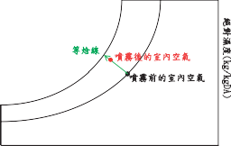
等焓線
噴霧後的室內空氣
噴霧前的室內空氣

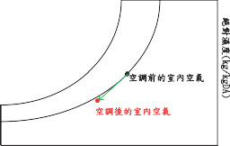
空調前的室內空氣
空調後的室內空氣
絕對濕度(kg/kgDA)
絕對濕度(kg/kgDA)
乾球溫度 (℃)
圖4.22 噴霧前後空氣狀態變化過程
乾球溫度 (℃)

圖4.23 空調催花室空氣狀態變化的過程
Kamp et al., 1996整理重繪)
圖4.26 植物體溫相同於氣溫時的蒸散。 (參考
重繪)
圖4.25 氣孔抵抗。 (參考Kamp et al., 1996整理

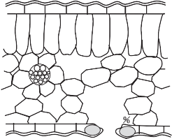
圖4.24 氣孔腔內的相對濕度為100 ％。 ( 參考 Kamp et al., 1996整理重繪)
某種程度的開閉，而影響蒸散作用進行，稱為氣孔抵抗，如圖4.25所示。當植物蒸散水分超過根系所吸取水分時，植物將枯萎而關閉氣孔。氣孔開放程度愈大，則水自氣孔蒸散至溫室內空氣的抵抗愈小。
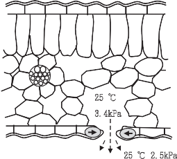
25 ℃
3.4kPa
25 ℃ 2.5kPa
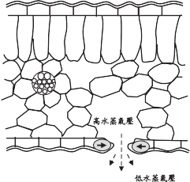
高水蒸氣壓
低水蒸氣壓
植物蒸散， 受氣孔腔內與週遭空氣間水蒸氣壓差，及氣孔抵抗的影響。氣孔抵抗則受植物的水分狀態及溫室內空氣中
CO2濃度影響。高CO2濃度下，氣孔關閉、蒸散速度降低。
蒸散速度受植物與週遭空氣間水蒸氣壓差的影響。另一方面，水蒸氣壓則決定於植物溫度與空氣的狀態。因此可以植物體溫度相同於氣溫、植物體溫度低於氣溫、植物體溫度高於氣溫等三種狀況加以探討。
植物體溫度相同於氣溫的狀況
圖4.26為植物體溫度為25℃，氣孔腔內相對濕度為100％，溫室內氣溫為 25℃，相對濕度80％的狀況。水蒸氣
壓差為3.4−2.5=0.9kPa。因蒸散所造成溫室內空氣水蒸氣增加，可利用換
氣加以去除。植物於充分的水蒸氣壓差下持續蒸散。
植物體溫低於氣溫的狀況
蒸散過程中必須吸收熱量，蒸散產生
後植物受到冷卻。於陰天，植物僅能自太陽取得少量的熱，週遭空氣在未飽和狀態下，溫室內空氣與氣孔腔內之間具有水蒸氣壓差，植物便可進行蒸散。而因為蒸散，自植物及空氣移出潛熱，結果將導致植物體溫度下降到低於溫室內氣溫。例如：圖4.27為植物體溫度23℃，氣孔腔內水蒸氣壓為2.8kPa，溫室內氣溫25℃、相對濕度80％的狀況。溫室內空氣水蒸氣壓為2.5kPa，如氣孔抵抗小於0.3kPa，則仍將產生蒸散。而於水蒸氣壓差較小的情況，仍有少量蒸散進行。
內水蒸氣壓增大，同時，放射熱做為植物蒸散作用的能量來源。例如：植物體與空氣的溫度均為25℃，溫室內相對濕度80％，水蒸氣壓差為
3.4−2.5=0.9kPa。因日射，植物體溫度上升為27℃，溫室內氣溫仍維持為
25℃，如圖4.28所示。此時，蒸氣壓差增加為3.6−2.5=1.1kPa，植物進行更多的蒸散。
太陽放射對植物加熱，此熱必須加以去除，否則植物將形成過度高溫。大部分的熱以蒸散方式去除，剩餘熱量將導致植物體溫度升高，當溫度高於室內氣溫時，植物直接將熱量透過熱交換釋放至空氣中。此條件下，供給的熱量與植物體溫度及蒸散與溫室內氣溫之間，將達成動態平衡。
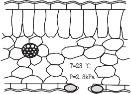
T=23 ℃
P=2.8kPa
T=25 ℃、P=2.5kPa
圖4.27 植物體溫低於氣溫時的蒸散。 (參考Kamp
et al., 1996整理重繪)
植物體溫高於氣溫的狀況
於晴天、日射強的天候，植物接收大量放射熱，植物體溫度上升，氣孔腔
27 ℃
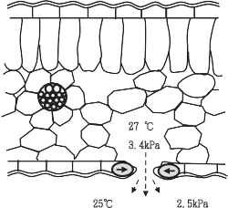
3.4kPa
25℃ 2.5kPa
圖4.28 植物體溫度高於氣溫時的蒸散。 (參考Kamp
et al., 1996整理重繪)

植物體溫度若高於大氣溫， 縱使週遭空氣的RH為100 ％，植物也能進行蒸散。例如：植物體溫度28 ℃，溫室內氣溫25 ℃，溫室內空氣濕度為100 ％時， 氣孔腔內水蒸氣壓為3.8kPa，溫室內空氣水蒸氣壓為3.2kPa 。水蒸氣壓差為 3.8−3.2=0.6kPa，植物仍進行蒸散。
結露作用
在日常生活中，從冰箱拿出冰飲料置
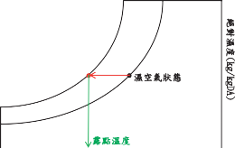
濕空氣狀態
露點溫度
絕對濕度(kg/kgDA)
於桌上，一段時間後，因濕空氣接觸低於露點溫度的表面，使飲料瓶外凝結許多小水滴，此現象就稱為結露。如圖4.29所示。
乾球溫度 (℃)
圖4.29 結露作用於濕氣圖上的示意
清晨日出時與加溫作業時，作物體上常產生結露的現象。以日出時為例，陽光照射植物，植物接收熱量後，葉溫上升，氣孔腔內水蒸氣壓增大，蒸散增加，溫室內氣溫及相對濕度也上升。植物果實或芽的溫度上升得較為緩慢，而產生結露。
例如：夜間溫室內乾球溫度20 ℃，
相對濕度85％，植物體溫度也為20℃。太陽或加溫裝置將溫室加熱後，葉溫及氣溫上升至23℃，此時果實溫度由20℃緩慢地上升至21℃。因水蒸氣蒸散至空氣中，僅須取得少量的熱，相對濕度於10～20分內即可增加5％。夜間相對濕度為85％，絕對濕度為12.4g/kg(DA)。日出後相對濕度由85％增加至95％，絕對濕度增加為16g/ kg(DA)。植物釋放出5.6g/kg(DA)的水蒸氣至溫室的空氣中。
空氣的新狀態為23℃、絕對濕度亦增為16g/kg(DA)。此時空氣的露點為22.2℃。因果實或芽溫度上升有時間延遲，故溫度僅上升1℃～21℃，低於露點溫度而產生結露。避免此問題的最佳方法為立刻進行通風換氣，於此例中，若植物釋放至溫室空氣中的水蒸氣，大部分透過換氣排出室外，使絕對濕度只增加3g/kg(DA)，成為 15.4g/kg(DA)。此時空氣的露點為20.7℃，低於果實或芽溫度的21℃，而不產生結露。
（七） APP程式
隨著時代的進步， 手機已變為生活中不可或缺的物品，現代的手機除了傳統通話功能外，搭載許多好用的APP軟體，更讓手機不僅僅是手機，更是一台行動秘書，因此在Google Play商店中，亦有幾款針對濕空氣性質進行運算的免費軟體可
供下載，包含Pschrometric、Psychromtric Calculator、Psychrometric Calc等，因為是免費的軟體，故在功能上皆有一些差異，可自行選用適合自己的軟體搭配運用，茲以Pschrometric與Psychrometric Calculator加以介紹。
Pschrometric介面中顯示的特性有乾球溫度 (dry bulb temp)、濕球溫度 (wet bulb temp)、相對濕度 (relative humidity)、絕對濕度 (humidity ratio)、露點溫度 (dew point temp)、比容 (specific volume)、焓 (specific enthalpy)。當按下畫面中的Input!，則會出現輸入性質的畫面，除了乾球溫度是必須輸入的性質外，你可以依據需求輸入濕球溫度、相對濕度或露點溫度其中一樣性質，輸入完畢後，按下Calculation start，透過APP運算，即可顯示該空氣狀態下的其他性質。此APP程式簡單好用，但少了一個性質：水蒸氣壓，若要計算該狀態下的水蒸氣壓，則可使用Psychromtric
Calculator這個APP。
Psychromtric Calculator主要有兩個功能。一個是不同溫度下的飽和水蒸氣壓表 (saturationtable of water)，另一個是則用來計算濕空氣性質 (air properties)。在Air Properties 的頁面中，上半部三個性質是用來輸入的，其中大氣壓力 (atmospheric pressure) 與乾球溫度 (dry bulb temperature) 是必須輸入的，第三個性質則有濕球溫度 (wet bulb temperature)、相對濕度 (relativehumidity)、絕對濕度 (specific humidity)、焓 (enthalpy) 與露點溫度 (dew point temperature) 可依需求選擇輸入。而下半部所顯示的性質除了上述所列的性質外，還包括了蒸氣壓 (vapour pressure)、飽和度 (degree of saturation)、比容 (specific volume)，此APP的功能較Pschrometric強，但是它有一個缺點，就是當第三個性質不是輸入濕球溫度時，下半部濕球溫度就無法顯示。

第二節 溫室內氣候環境特徵與控制
一、溫室內氣候環境特徵
溫室利用被覆資材將作物生長空間與
外界隔離，內部形成明顯相異於露天氣候的環境，且容易受外界氣候變化影響而大幅變動。對比於外界氣候，溫室內環境因子具有下列特徵。
（一） 光
溫室構造與一般建築物最明顯的差異，在於溫室的外部被覆必須使用透光性的材料。對任何形式的溫室，溫室內的光環境，對比於露天具有光量減少、光質改變及分布不均等三項特徵。太陽光透過被覆材料時，因被覆資材的反射與吸收及樑、柱等構造材料的遮光，到達溫室地面的光量約僅為露天地面的60～70％，產生光量減少的現象。太陽光在透過溫室被覆的過程中，也因被覆材料成分對某波段光譜的吸收特性，太陽光穿透被覆材後產生光質的變化。另外太陽位置在不同季節、時刻的變化，構材遮光造成地面的陰影位置隨時間產生改變，及溫室各壁面幾何位置相對直射太陽光的角度相異造成的強弱光穿透，形成溫室內地面光量分布不均的現象。在溫室的設計，如溫室建造方位、
溫室幾何形狀、使用被覆材料種類及構材設計等因素，均影響室內光環境的變化。
（二） 溫度
位處熱帶亞熱帶地區的溫室內的溫度氣候具有二大特徵，第一為極容易高溫化，晝夜間的溫度可產生大幅度的變動，第二為室內的溫度通常處於不均一的分布狀態。晴天的狀況下，白天進入溫室內熱量主要來自太陽光的日射，溫室內溫度在日出後即快速上升，約正午時刻達到最高溫度狀態，此時進入溫室的日射熱量等於流出溫室的熱量。溫室處於較密閉狀態，通風性較差，或夏季強日射量下，溫度升高程度愈大，密閉溫室可升溫到2倍外氣溫，通風不良溫室夏季白天甚至可高達 50～60℃以上，相對在冬季或陰天，日射量較小，此升溫程度則較為緩和。而於午後太陽西降開始，日射量逐漸減小，溫度即呈現急速下降的現象，日落後約可維持稍高於外氣溫的室內溫度。於日落後地表面、作物體或被覆等固體表面會持續以輻射方式釋出熱量，夜間溫室內熱量來源主要來自深層土壤地熱，無熱量補充的作物葉面或被覆等固體表面，持續輻射冷卻過
程中會反向的自空氣掠取熱量，夜間氣溫會慢慢稍降，通常在曙光露出前為一日當中最低溫時刻。
除晝夜間溫度的劇烈變動外， 在溫室內部也隨時形成橫斷面及縱斷面的溫度分布。溫室內空氣與地面、構材或被覆等固體表面的對流傳熱，空氣熱量改變形成垂直對流，造成溫室橫斷面的差異溫度分布。另外從溫室孔隙或通風開口，外氣的流入在室內形成環流，造成溫室縱斷面的溫度分布。溫室內各處空氣溫度，因垂直對流及環流的綜合效應，隨時處於不均一的分布狀態。
（三） 濕度
台灣屬熱帶海島型氣候，大氣環境本就常處於高濕度狀態。溫室內灌溉水經由土壤蒸發及作物蒸散隨時產生大量水蒸氣分子，必須藉助相當足夠的通風量才能加以排除，在平常通風的情況下，溫室內水蒸氣分子量通常大於外氣，灌溉水量愈多或植栽密度愈茂盛的情況，水蒸氣量也相對增加。溫室內的水蒸氣量所形成的相對濕度，因外界氣候的變化可產生大幅度變動，在一般晴天，晝間因室內溫度升高的效應，室內可維持較低於外氣的相對濕度，於夜間則因溫度降低，通常會處於較高濕的狀態。相對的在陰雨的天候下，晝
夜間室內均可能處於高相對濕度，尤其在夏季陰雨季節氣溫、濕度均高的外氣狀態下，雖然有進行通風，難以避免溫室內形成高溫又高濕的環境。
（四） 風
玻璃或塑膠布等被覆材料的阻隔，或通風開口覆蓋防蟲網對空氣流動產生的阻抗，溫室內的風通常都較為微弱，因溫室規模或通風開口或設備等配置因素，甚至某些區域位置可能處於無風狀態。
（五） CO2
夜間作物呼吸作用釋放CO2，可將室內維持高於外氣的CO2濃度，當日出後作物開始進行光合作用，室內CO2濃度視植栽狀況可急速降低。通常的情況，若無外氣、土壤微生物或人工補充，在晝間室內 CO2濃度通常維持在低於外氣的狀態。
（六） 雨
阻隔外界降雨，室內土壤水分須依賴灌溉補充。另外，露天田間土壤中過剩肥料可藉雨水沖洗或地下滲透流出，相對溫室內灌溉水量較少，長期間栽培容易產生鹽類累積，造成障害。
圖4.30 作物生理作用與環境。 (整理自Kamp et al., 1990)

二、溫室內氣候環境控制
溫室的使用以保護作物為初始目的，
在現今氣候異常頻繁發生，對農作物生產屢屢造成破壞的環境下，更顯現出利用溫室生產的意義。除保護作物的基本功能外，因溫室工程技術的快速進展，作物生理與環境相關的大數據累積，配合室外氣候型態與變化，應用適當的環境控制設備，調整適應作物生理需求的室內栽培環境，溫室生產可進一步朝產期調節，安全
高品質生產及提高產量的方向發展，促進溫室利用效益。
溫室內可栽培各式各樣的作物，栽培目標在於發揮作物生理作用，達到增加產物的重量或大小，亦即增加作物生長。作物體可視為某種工廠，生理作用為生產設備，將所投入的原料轉換為作物體的根莖葉、花或果實等各個器官組織。對所有植物體均具有下列共通項目的基本生理作用：
（一） 光合成。
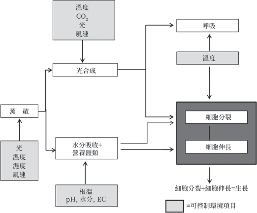
（二） 呼吸。
（三） 細胞的分裂與伸長。
（四） 蒸散。
各作物於不同生長階段，各有其必要的生理作用環境，為控制此些生理作用，生產者所能操作的環境因子如圖4.30所示。
控制影響作物生理作用的環境因子，提供充足原料，再經由良好的栽培管理可充分提高作物的產能。作物生產過程中經由各個途徑調度生理作用所需原料，主要包括地上部葉片的光合成產物，及地下部根系自土壤吸收水及營養鹽類。綜合植物體不同位置器官各自的生理作用需求環境，以土壤面為界分，溫室所必須提供的環境項目如下所列：
（一） 地上部
光環境─光量，光質，日照時數。
溫度環境
濕度環境
CO2環境
氣流環境
（二） 地下部
溫度環境
土壤環境─水分、EC、pH、O2。
於溫室栽培中對上列環境項目，可運用對應的環境控制設備或裝置，將溫室內環境調節或控制到適當的範圍。而對單一
的環境項目控制，至目前所發展的技術，分別也有各式各樣的方法及設備方式能夠利用，某些結合自然環境為動力的方式，可能只能將環境調節到接近適合的範圍，成本較低但具有環境值控制的極限；某些採用高階機械設備方式，能較精準控制到需求的環境值，相對設備及營運成本也較高。如前所述，溫室栽培除保護作物外，導入各項環控設備配合外界氣候變化進行室內環境修正，進一步透過網路、通訊系統，結合作物生理與環境關係的大數據分析等先進技術施行智慧化管理，更能發揮省工省時，安全高質化穩定生產的溫室栽培效益。而要能達到溫室環境控制效能，必須建立於基本的環控設備及環控技術的正確設計，原則上可依循下列步驟實施：
（一） 決定所要控制的環境因子及室內作物需求環境。
（二） 考量需求室內、外設計條件及經濟性，選擇環境控制設備或裝置的種類。
（三） 由室內、外設計條件，計算環控設備的容量大小。
（四） 由設計容量決定環控設備型式與數量。
（五） 依作物栽培管理需求，決定控制設備樣式，及環控模式與策略。
高壓植物燈，LED等人工光源。
外遮光，屋頂面遮光，內遮光。
補光
遮光
過大
不足
光量

第三節 光環境控制
光提供作物生長與生育所有需要的能量，太陽光能以最大量透過，為溫室設計及建造的最初始原則。因太陽方位、高度及天候狀況等自然因素，溫室座向、幾何形狀、被覆材料與構材尺寸等溫室本身構造因素，溫室內隨季節與時刻產生光強度、光質及日長時間等光環境的變動。在變動的光環境下，按照栽培作物光合成及光周期之需求，溫室內的光環境控制有下列的發生狀況，所對應的處理方法，及使用設備或裝置如表4.6所列。
一、遮光
進入溫室內光量過多時，使用遮光網
遮除過多的光量，可降低光照強度以適合栽培作物的光強度需求，另可減少夏季過多的太陽輻射，減少溫室內的熱累積。遮
表4.6 溫室光環境的發生狀況及對應方法與設備
光網有不同顏色、材質及編織方法，顏色有黑、白、綠、銀等色系，材質分有PE、壓克力及表面鋁箔塗覆等，編織方法有平織、羅紋織及針織 (百吉網) 等。遮光網以不同材質的塑膠纖維，編織成不同網目大
小，而具有不同的遮光率 (s = (1−遮光網下方日射量)/遮光網上方日射量×100％)，市
面販售遮光網的遮光率均會標註於型錄，提供參考選用。遮光率決定進入溫室內的日射量大小，遮光網的選擇首先依溫室所在地的室外設計日射量條件及栽培作物的光量需求，選用遮光網的遮光率 (網室的情況，尚需考慮網目大小的防蟲性能)。另外不同材質及編織方法對遮光網的拉力、抗紫外線或抗熱等耐候性也有所不同。目前大部分溫室採用的遮光網，採用黑色、 PE材質、平織的遮光網為主，價格相對便
狀況 | 方法 | 設備 |
光質 光周期 | 光質調整長日處理 | 被 覆 機 能 性 塑 膠 布 被 覆 。 補光 高壓植物燈，LED等人工光源。電 照 白 熾 燈 泡 ，LED 等 人 工 光 源 。 |
短日處理 | 暗黑處理 不透光塑膠布或不織布遮蔽。 |
宜，但具有容易吸熱，吸熱後二次將熱量再釋放至溫室內，及拉力強度差、耐候性差等缺點，使用白、銀色反光性高的遮光網，不易吸熱且可將部分日射反射，可改善降溫效果。
遮光網為熱帶亞熱帶溫室的必要附屬設備，可具有下列直接及衍生的效益：
（一） 遮光排除進入溫室內的過多光量：陰性作物栽培，定植後苗的保護，防止日燒或瓜果類因日射產生裂果等。
（二） 調整溫室內空氣溫度及相對濕度：強日照低濕度下，減少進入溫室內熱量，降低溫度提高相對濕度。
（三） 減緩葉面的過度蒸散：維持氣孔開啟，促進光合作用或降低瓜果類因過度蒸散產生缺鈣現象。
（四） 低溫期夜間保溫：減少地面輻射冷卻及透過溫室被覆表面散失熱量，避免形成室內過度低溫造成寒害。
遮光設備分有外遮光及內遮光， 或直接覆蓋於屋頂面的外遮光等方式。以調整到達葉面光量的目的，各架設方式的效果相差不大，而在作為降溫的輔助手段方面，外遮光因在室外直接遮除過多的日射熱量，相對於內遮光，日射熱量已進入室內再遮除方式，外遮光具有較佳的降溫輔助效果，但有搭建成本較高、室外架設
容易受強風破壞等缺點。從使用效果的觀點，熱帶亞熱帶溫室的遮光設備，除常年性蝴蝶蘭或觀葉植物等單項作物栽培，適宜採用固定式遮光外，一般溫室以電控活動式外遮光為建議採用方式，可隨時因應室外日射量變化，彈性調整進入溫室內的光量與熱量。外遮光的架設，結構型溫室在長度方向以柱間距，簡易型溫室約3～ 4m為單元分段設置，避免強風時受力過大，或啟閉時拉力過強，發生遮光網破壞的情況。另外強日射遮光時，遮光網下方容易形成溫濕度較高的空氣狀態，遮光網須設置於屋頂面上方約30～50cm處，維持遮光網下方空氣的流通。在天窗開啟時，視溫室內溫濕度狀態，須排除較多熱量與水氣，或外界風力較小的情況，遮光網的控制上，以作物不受直接日射為原則，可適度開啟一間隙，促進遮光網下方高溫濕度空氣的排除。
外遮光的架設必須於溫室外部搭建遮光網支撐骨架，相對內遮光僅需於屋頂面
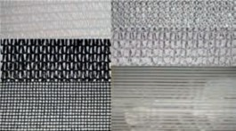
圖4.31 遮光網種類例

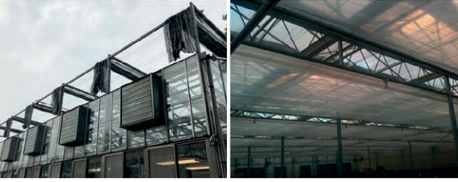
圖4.32 遮光設備
外 遮 光 內 遮 光
下方，利用簡單鋼材支架或鋼索即可輕易施工架設，具有搭建成本低及耐用年限長等優點，雖然降溫輔助效果不如外遮光顯著，但可減少地面或作物體的直接吸熱，對溫室內溫度環境的改善，仍具有相當程度的助益，在低溫期夜間的保溫效果也優於外遮光，對簡易型溫室在結構上難以架設外遮光，或基於搭建費用考量等因素，內遮光為必要的配備，並以採用反光性材質遮光網為優先選項，加強降溫效果。室內架設遮光網後，對裝置天窗的溫室通風將形成阻礙，相同於外遮光的控制，在強日射同時遮光與通風的情況，須適度開啟一通風間隙，促進遮光網下方高溫濕度空氣的排除。
二、補光
補光的目的在於促進作物的光合成，
當光量不足或需求提供特定光質時，利用人工光源的方式補充，早期的人工光源主要使用高壓植物燈，平均分布架設於溫室天井處，由上方往下照射。高壓植物燈價格昂貴，容易產生高熱，近來LED製造技術精進，價格呈現平民化，且經由封裝過程可應光譜需求客製化，已漸取代高壓植物燈，為目前普遍運用的補光人工光源種類。於熱帶亞熱帶地區，充足日照原為栽培優勢，而因異常氣候的變化，時有連續陰雨天候，日照不足導致產量及品質的降低，栽培業者導入補光設備的意識因而逐漸提高，有必要發展熱帶亞熱帶地區補光技術，或導入補光設備後，利用密植栽培提高使用效益等應用方向，以因應未來需求。
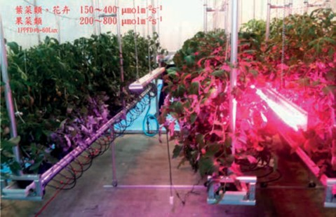
圖4.33 LED光源補光
LED規格與型式種類眾多，發光特性各有差異，適用作物的光質、光強度與補光時間等內容，於中正基金會編印另本
《植物工廠的栽培應用理論與營運操作實務》有詳細說明，此處不再贅述。一般補光光量要求達到作物的光補償點以上，為不使LED光源產生過多光量擴散損失，補光燈具要求能盡量接近作物補光位置，如番茄栽培可設置於植冠內或植冠間，並能隨栽培管理作業調整高度，充分發揮補光能源效率。
三、電照
電照相同於補光使用人工光源， 目的在於促進長日植物開花，或抑制短日植
物的開花，以人為方式延長作物的日長時間，台灣早期在切花外銷開始年代，便已應用於菊花的產期調節，近年來更普遍推廣於火龍果、筊白筍或葡萄等作物的產期延長使用。早期菊花電照人工光源主要為白熾電球，光源的高度及燈距配置，影響到達作物體的光量大小及分布，電照時要求能夠達到需求光量及均一分布外，也希望能使用最少數目的燈泡。菊花電照一般採固定於離地面高度約為150～180cm，燈距約為300～350cm，燈行距約為240～ 370cm之方式，如對田尾某12m×7.2m的菊花栽培田區，使用100W之白熾燈泡電照，燈泡架設高度為150cm，燈距300cm，燈行距360cm之配置情況下，量測其照度分布
圖4.34 一般田間照明之等照度線圖

之結果如圖4.34，可觀察到在田區中央部位產生光量集中的現象，疏離中央位置即有照度逐漸減弱之趨勢，整體分布相當不均勻。對白熾燈泡以正方形及三角形的不同排列，以電照要求最小照度30～50lux，模擬最佳排列結果如圖4.35，其中三角形排列方式，具有較均勻的光量分布及最少光源數目。早期電照光源主要使用白熾燈泡，目前也逐漸被LED燈泡取代，眾多 LED光源規格中，例如圖4.36火龍果電照燈距也無安裝的依循標準，出現光量分布不一或電力浪費等問題，甚至有基於光源波長因素，使用客製化產品，遭遇損壞更新時，新品昂貴並取得困難等窘境。客製化產品可能具有較優良的電照效果，而在實際栽培可考慮選擇大廠牌容易取得的光
源種類，先以3～4顆光源排列不同燈距，簡單量測比較光量分布後，決定最佳間距配置。
電照栽培的照明時期與照明時間大致分有：（一）日出前4～8小時連續照明的日長延長法、（二）日落後4～8小時連續照明的日長延長法、（三）夜間2～5小時連續照明的光中斷法及（四）夜間2～5小時反覆點滅燈的間歇照明法。在照明時間的控制，普遍使用標準時間定時器啟閉方式，因季節太陽日出日落時間的變動，必須經時數天內調整定時器時間設定，若以栽培所在地的經緯度計算每天太陽日出日落時間，依據太陽時時間控制照明時間，能夠得到精準的電照時數，並有節電的效果。
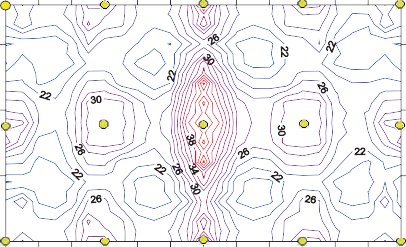
720cm
360cm
0cm
300cm 600cm 900cm 1200cm
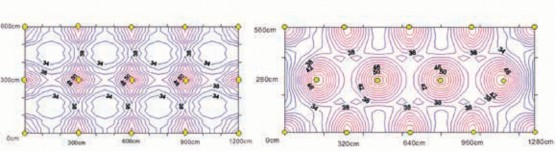
正方形排列理論值等照度線圖 三角形排列理論值等照度線圖圖4.35 模擬不同排列最佳配置之等照度線圖 (最低要求30lux)
短日處理要求維持光量在最小電照光量以下，通常以不透光的塑膠布或不織布，對栽培區域作局部性暗黑覆蓋，操作上可使用相同保溫幕的自動開閉機構控制，於日落前數小時啟動遮蔽幕，施行暗黑遮蔽。因短日處理一般應用於夏天日長較長季節，遮蔽幕啟動將可能使溫室內環境瞬間產生急劇變化，如盛夏時期必須遮蔽，植物本得以自由地進行蒸散及光合作
用，遮蔽幕啟動後可能致使作物生理作用的障害。為盡量減少此環境的突然變化，及避免形成過高的溫度，可視遮蔽幕設定啟動時刻的溫度及日射量狀況，若溫度或日射量仍處於較高的狀態，可延遲數十分
～數小時的時段再啟動遮蔽幕，此延遲時段再於日出後溫度較低，日射量較少的時刻，延長為遮蔽時間範圍。
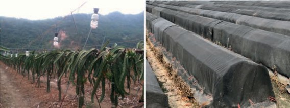
火 龍 果 電 照 長 日 處 理 白 韭 菜 暗 黑 處 理 栽 培 圖 4.36 電 照 與 遮 蔽 栽 培
圖4.37 影響室內熱平衡的熱流途徑

第四節 溫度環境控制
溫室內空氣的溫度由進出室內外的熱量差大小所支配，影響溫室內熱環境的因子如圖4.37所示，進出溫室熱流的途徑可歸納為日射熱量、壁面熱傳遞量、換氣熱傳遞量、蒸發散吸收熱量、加溫系統提供的熱量及地面熱傳遞量。
各途徑熱流的流出流入通常處於變動的非定常狀態，當室內於一時間內維持固定氣溫，在現象的解析上可視為定常狀態，即流入=流出時達到熱平衡，對一無
加溫溫室的熱平衡可表示如下式 (三原， 1980)：
(4.19)
ARn+KD (TDB −Tin) + CpρQ
(TDB −Tin) − LE0 − AB = 0
上式中：
A： 溫室地面積 (m2)
n
R ： 進入溫室的淨輻射量 (W/m2)
K： 壁面熱傳遞率 (W/m2℃)，玻璃為 5.82W/m2℃，塑膠布6.75W/m2℃
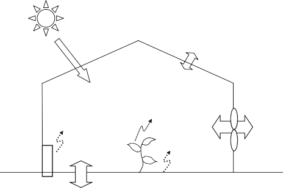
壁面熱傳遞量
KD(TDB-Tin)
日射熱量 Rn
加溫熱量
蒸發散熱量
LE0
換氣熱傳遞量
CpρQ(TDB-Tin)
地中傳熱 B
D： 溫室表面積 (m2) TDB： 外氣乾球溫度 (℃)
Tin： 室內空氣乾球溫度 (℃) Q： 通風量 (m3/hr)
Rn = τ Rs(1 − α )(1 − s) (4.20)
上式中：
C ： 空氣容積比熱 ( 比熱×密度＝ R ： 室外日射量 (W/m2)，盛夏白天約
pρ
1206J/m3℃)
s
800～1,000W/m2
LE0： 室內蒸發散吸收熱量 (W)， E0為室內蒸發散量 (kg/hr)，蒸發散率 ef=E0/A，夏天無遮光溫室內約為 6～8g/m2min，L為水的蒸發潛熱 (2,500kJ/kg)
B： 地面傳遞熱量 (W/m2)，地表面往
下傳遞為正值，地溫不變層熱量往上傳遞為負值
熱平衡方程式中的室內淨輻射量Rn可以由下式表示：
表4.7 溫室內溫度控制的方法與使用設備
τ： 日射透過率 (-)，一般溫室夏天約為0.65
α： 室內反射率 (-)，約為0.1 s： 遮光率 (-，0～1)
(4.21)
Tin = TDB + ARn − LE0 −AB
KD + CpρQ
由式4.19，熱平衡狀態下溫室內的溫度可求得如下：
觀察上式各項環境因子組成，可作為
狀況 | 方法通風 蒸發冷卻 空 調 輔助手段 保溫 | 自 然 通 風 。 設 備 或 裝 置 |
溫度過高 | ||
強制通風。 水牆。噴霧。 冷氣機、熱泵及地中冷卻等。遮光、屋頂噴水等。 保溫幕、屋頂流水。 | ||
溫度過低 | ||
加溫 | 熱風。 | |
熱水。 | ||
熱泵、地熱等。 |
構材塗覆白色反光漆
離地栽培地面覆蓋白色抑草蓆
圖4.38 減少地面及構材吸收熱量之例

人為操控室內溫度Tin方向的依據。白天溫度過高的降溫處理，即須減小式4.21的右項數值，可行方式有利用水牆降低進入溫室內的空氣溫度TDB，利用遮光減少Rn或噴霧增加LE0，使分數項中的分子數值減小或為負值，或可增加通風量Q加大分母數值等操作，驅使Tin往較小數值方向變動。相反地，溫度過低時，可先行利用保溫幕減小K及Q值，不足時再以加溫補充熱量，增大Tin數值。目前相對作物或作業環境之需求，溫室內溫度環境因外界氣候變化可能造成的狀況，及所須對應的處理方法與使用的設備或裝置有如表4.7所列。
一、降溫輔助措施
熱帶亞熱帶地區白天溫室內容易形
成高溫現象為設施栽培深刻的課題，造成空氣溫度升高的熱量，並非空氣分子直接
吸收太陽光熱量，主要為溫室內的地面、樑、柱構材或栽培床器材等固體材料，吸收太陽光的熱量表面溫度升高後，室內空氣再以對流方式吸收固體材料表面熱量，間接形成空氣升溫的現象。荷蘭有提出增加溫室內1％的光量，可增加1％作物產量的「1％理論」，溫室內普遍採用白色抑草蓆覆蓋地面，及構材塗覆白色反光漆，充分利用反射光線的措施。熱帶亞熱帶地區溫室雖較少光量不足的情況，利用反光資材，減少固體材料的日射吸收熱量，有助於避免室內空氣過度吸熱，減緩升溫的效應。實際對西螺地區空心菜地面栽培的同型溫室，構材塗覆白色反光漆的量測結果，相較於無塗覆溫室，晴朗夏天外氣溫度35℃，管件構材溫度可降低10～15℃，室內溫度約降3℃，確有抑制室內過度高溫的效果。另外降低在塑膠布接觸的管件、
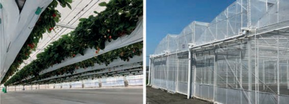
壓條等位置構材的溫度，也可減緩塑膠布的老化，延長使用年限。對番茄、小黃瓜等栽培溫室，反射光可消除部分作物本身遮光產生的陰影，均一日照，直達日射無法到達的下位葉部位也可充分吸收，具有促進光合成的衍生效益。
台灣地區的溫室大部分採用自然通風，晝間室內CO2濃度通常低於外氣，相對作物的光合成，過多的日射將形成室內氣溫上升的熱量來源，在強日射的天候下，可於正午時間段，如am11:00～pm1:00施行遮光處理，減少進入溫室的過多熱量，遮光網為熱帶亞熱帶溫室必要的基本配備，作為降溫的輔助手段，以外遮光為
建議採用方式，而於簡易型溫室等結構上難以架設外遮光的場合，也必要應用屋頂覆蓋遮光或內遮光，調節到達作物體的光量與熱量。
二、通風
依據室內外溫度設計條件，溫室的降
溫區分有不同階段的設計與控制操作，如圖4.39，在室內設計溫度的需求高於外氣溫度的情況，經由適當風量的室內外冷熱空氣交換即能夠達到需求，此操作稱為通風或換氣。而通風有其降溫的極限，當通風量Q無限大時，式4.21右邊分數項=0，理論上只能將室內溫度調整到相同於外氣溫
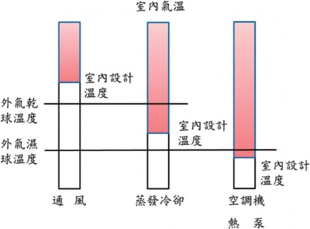
圖4.39 溫室降溫階段的區分
圖4.40 通風種類

度TDB的程度。若須將室內溫度降至外氣溫以下，通風外另須配合下列章節所述之水牆或噴霧，利用蒸發冷卻的操作才能滿足需求。憑藉室內外空氣交換的通風，除具降溫的功能外，另可用以濕度、空氣流速及CO2補充等其他環境因子的調整，為溫室環境控制項目中最基本的操作手段。
在溫室降溫的通風設計，除要求排放多餘熱量達到需求室內溫度外，並要求室內溫度能夠分布均一，亦即包括通風量及通風開口性狀的設計。通風量的大小關係降溫的程度，依不同應用場合，通風量有下列表示方式：
通風量Q (m3/min，m3/hr) =單位時間的空氣交換量
通風率q (m3/m2•min) =通風量Q/溫室地面積A，溫室單位地面積單位時間的空
氣交換量
換氣次數N (次/min，次/hr) =通風量Q (m3/hr) /溫室體積S (m3)，單位時間交換單位溫室體積空氣量的次數
通風量Q(m3/min)
=通風率q (m3/m2•min)×溫室地面積A (m2)
=換氣次數N (次/min)×溫室體積V (m3)
通風為室內外空氣經過溫室的通風開口產生流出或流入的操作，空氣流動必須有壓力差作為動力，按照在通風開口製造壓力差有無使用機械設備，通風可分成如圖4.40之種類，第一～三種通風在入風口或出風口有利用風扇設備，稱為機械通風或強制通風，通風量可依據設計任意調整。第四種通風為自然通風開口，風量受天候狀況左右，不易人為操控。在通風設
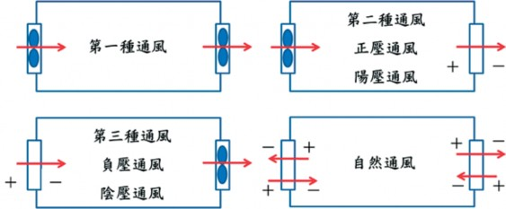
計上，開口大小、幾何構造形狀及出入風開口相對位置等因素影響，流出流入空氣在溫室內部不同位置造成差異的流速與風向，室內各位置因而具有不同的溫度分布。
（一） 自然通風
台灣地區溫室的降溫處理除蝴蝶蘭栽培外，基於經營成本的考量，絕大部分作物栽培的溫室以採用自然通風為主。自然通風為溫室環境控制技術當中最基本的方法，在省能源農業的前提下更具有其重要性。形成自然通風的主要驅動力為：1. 溫度差產生的浮力換氣。2. 外風產生的風力換氣等兩種，於自然氣候的動力下造成空氣流動，空氣透過溫室高低位置的通風開口，產生室內外空氣的交換。浮力、風力換氣對自然通風的影響因風向、風速、日射量等氣象因子之變化而改變，也因相異之溫室性狀，各有不同的自然通風效果。
一般溫室的自然通風型態，外風速在1m/ sec以下時利用溫度差為主要動力，室內熱空氣由高位置的天窗開口流出，於低位置的側窗開口處形成負壓，室外冷空氣流入，通過高低位置的通風開口產生室內外空氣交換。風速在2m/sec以上，則以風力為主要動力進行通風，風力造成溫室各位置相異的壓力分布，室外空氣由上風側正壓開口流入，室內空氣從下風側負壓開口處流出。而風速在1～2m/sec之間，溫度差換氣和風力換氣依狀況 (開口形式、風向、溫度差大小等) 有互相加強或互相減弱的現象。以山型溫室為例，各不同狀態下自然通風及室內氣流流動型態約略如圖4.41。
自然通風時經由各通氣窗產生空氣流入流出的現象，並在室內形成相異於室外的氣流流動情況。自然通風對溫室內高溫抑制的效果即受此流入流出量 (通風量) 的大小及室內氣流流動情況等因素的影響。
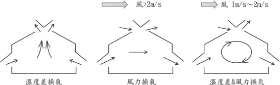
圖4.41 自然通風的基本型態。 (佐瀨，1982)

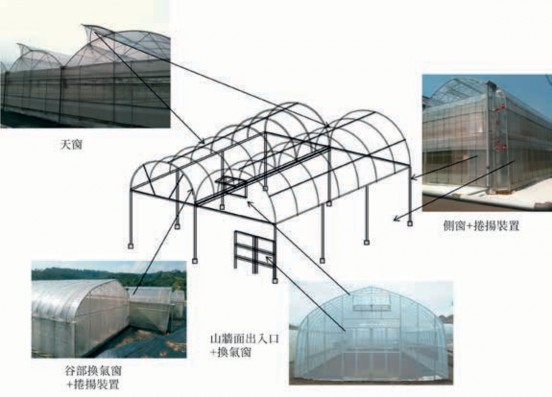
圖4.42 塑膠布溫室常用的通氣窗位置及種類
其中通風量大小決定降溫的程度，室內氣流流動狀況則影響室內溫度的高低分布。而一溫室設計之初經由業者之意識可支配上述因素的因子包括風向 (建設方位)，溫室構造 (幾何形狀、通風窗設置)，通氣窗構造 (形狀、位置、面積大小) 等。以塑膠布溫室為例，目前通風窗的設置位置及構造種類如圖4.42。
單棟溫室的自然通風特性
塑膠布溫室常用捲揚裝置調整側窗開
口大小，此類型開口屬於縱長形狀，在溫度差換氣 (無風) 時因室內外高低位置溫度
差不同，在側窗上形成一空氣不流出也不流入的位置，稱為中性帶。在中性帶以上的側窗部位室內空氣流出，中性帶以下部位室外空氣流入而產生內外空氣交換 (圖 4.43)。一般中性帶通風所能產生的通風量較少，並侷限於通氣窗附近的範圍，在溫室中央部分不受影響而容易形成高溫的現象。當風力逐漸增強，中性帶的位置會隨著外風速增加而往上移動。在風速達到某程度使中性帶位置高於通氣窗高度時，溫度差換氣即轉換為風力換氣。風力換氣時，進入到室內的大部分氣流在通氣窗高
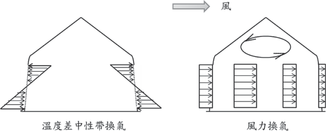
圖4.43 無天窗塑膠布溫室捲揚通風開口的通風性狀
度的範圍平行流動，但於通氣窗高度上下的空間，因平行氣流產生的氣門效應，蓄積的熱氣較不易排出，也容易導致高溫的現象。
台灣氣候型態，夏天常處於軟風狀態，基本上沒有設置天窗的自然通風設施內 (溫室、遮雨棚)，因通風效果差較易形成高溫高濕的狀態。對熱帶亞熱帶地區溫室，透過自然通風改善室內環境的前提下，天窗為必要的基本配備。無論何種形式的天窗，要能發揮良好的通風效能，一般要求開口面積至少需要地面積的20％以上，從此一促進自然通風的觀點，另有發展出屋頂可大面積開放的全開式溫室。對國內栽培業者普遍使用的塑膠布溫室，基於天窗設置成本的考量，常見採用單側開口式天窗，此情況下，天窗主要目的在於
排除室內高溫空氣，天窗開口方向原則上配置在下風側，風力換氣時側面開口高度以下的作物生長空間內，可得類似無天窗溫室的氣流模式，但天井空間蓄積的熱氣可因風力造成的負壓而帶走，達到通風降溫效果。
連棟溫室的自然通風特性
比較於單棟溫室，連棟溫室因進入室
內的熱量隨連棟數比例增加，且相對地面積的通風開口面積比例減少，連棟數愈多通風效果愈差。一般通風良好的溫室換氣次數須達60～70次/hr，目前通風情況較佳的溫室也僅達30～40次/hr左右，整體上屬於通風不良的狀況。溫度差換氣時，無天窗的連棟溫室縱使四周完全開放，通氣範圍也僅限於四周側壁附近。風力換氣時，外氣流入口通常僅限於上風側側窗，且因
室內作物或器具對氣流流動的抵抗，甚至空氣本身的阻力，外氣流入後隨著流動距離的增長，流速逐漸減弱，通常氣流行走距離不會超過10m以上，溫室內長度超過氣流行走距離極限，室外冷空氣無法到達的位置，便難以避免形成高溫的現象 (如圖 4.44)。在熱帶亞熱帶地區的連棟溫室為抑制室內高溫，加裝天窗促進通風為絕對必要之措施。且在風力換氣時，連棟溫室的外氣流入口因僅限於上風側之側窗，如何在風力換氣時增加外氣流入的開口面積以
增加通風量，為提高連棟溫室自然通風效率的可行方法。在單棟溫室的天窗以排除室內熱氣為用途，而連棟溫室中可考慮利用上風側天窗作為外氣的流入口，如荷蘭 Venlo型溫室千鳥式天窗，交錯方向配置用以增加外氣流入的開口面積，增加外氣流入風量促進通風。圖4.45對單側天窗的開放方向，模擬得到三連棟溫室最佳自然通風之例。除傳統的推出式及太子樓式天窗外，近年來國內溫室業者針對台灣地區氣候及使用特性，也有開發出塑膠布溫室屋
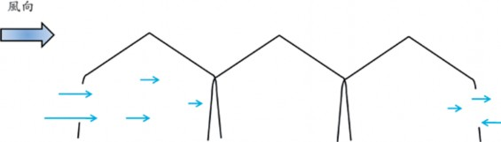
圖4.44 無天窗三連棟溫室的風力換氣
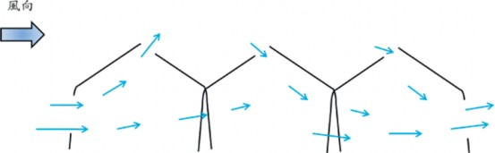
頂使用捲簾裝置可全面開啟，屋頂上方及四周再以防蟲網架設網室，高溫期扮演網室促進通風，下雨或低溫期，屋頂可密閉的溫網室兩用型設施。
防蟲網對自然通風的影響
熱帶亞熱帶地區害蟲繁殖力， 活動
力旺盛，在溫室的通風開口加裝防蟲網，防止害蟲侵入為一普遍使用的物理性防治方法。由於裝設防蟲網會因通風面積變小而減少通風量外，防蟲網對空氣的流動也具有抵抗，產生減風效果而降低通風量，網目愈小，在通風面積減少及抵抗增加的雙層效應下，常造成通風不良的情況。溫室通風開口架設防蟲網時，在不影響溫室結構安全的前提，可考慮盡量增大通風開口面積，並須注意因防治蟲害大小選擇適當防蟲網網目，此外防蟲網的汰舊換新，夏季高溫期防蟲網附著灰塵的隨時清除，為確保通風量的要項。此外防蟲網也具有整流效果，減低進入室內空氣的流速，防蟲網對氣流的抵抗特性，隨著流經防蟲網的空氣流速減小而變大，故在溫度差換氣或室外風速較小時，開口裝設防蟲網的溫室，更易形成通風量減少的現象，此現象特別是在天窗基部裝設防蟲網的溫室更為顯著，溫度差換氣時，天窗對基部底下熱氣的排出無法充分發揮效果。為改善此現象，防蟲網裝設於天窗開口外緣部，可得
有較大的通氣量，應用實例有如荷蘭溫室推出天窗的摺疊式防蟲網裝置。
防蟲網除了具有上述的減風、整流特性而減少通風量外，也具有阻止長波輻射之特性，因而在純網室內也常因輻射熱不易散發，造成熱累積現象。對於網室或通氣窗裝設防蟲網的溫室，改善通風的手段除選擇適當網目防蟲網外，另可於室內利用循環風扇加快氣流流速，或利用風管排風等強制通風方式輔助以增加通風量。近來溫室通風開口也可看見覆蓋粉紅色防蟲網之案例，此些防蟲網添加特殊原料製造，可將透過防蟲網光線的部分紫外光轉換為可見光，形成防蟲網內外明亮度的差異，利用昆蟲的趨光性，減少害蟲進入溫室的機會，於相同的防治效果下，可選用規格較大的網目以促進通風。
（二） 機械通風
自然通風受氣候左右， 通風量不易操控，而強制通風理論上可有安定的通風量，經由出入通風口相對位置的設計後，室內也可有平穩的氣流分布。園藝設施的機械通風方式主要利用第二種陽壓通風，及第三種負壓通風，對需求乾淨品質空氣的操作空間，一般使用陽壓通風，如組織培養室人員進出時，外界多量粉塵、細菌的空氣不致經由出入口流入室內。對一般

(4.22)
Q = ARn+KD(TDB −Tin) − LE0 −AB
Cpρ(Tin −TDB)
栽培溫室的機械通風，則採負壓通風為主要方式，機械通風的降溫，可由熱平衡方程式4.19，求得下式必要通風量Q：
設計上地熱傳導B可予以忽視，求出必要通風量Q後，計算所需風扇台數。溫室負壓機械通風使用外部附裝風控自動百葉窗，36"～52"的大尺寸風扇，驅動方式有皮帶式及直接式，可於風扇廠商型錄尋求適用規格的產品。而在熱帶亞熱帶地區溫室，夏天氣象條件下的通風降溫需要龐大通風量，僅單純應用機械通風，在實務
設計與營運上較難達成需求，必須配合人為加濕的水牆或高壓噴霧，可於高溫期進一步應用蒸發冷卻降溫，其風量計算另於蒸發冷卻章節敘述。機械通風在出入風口的配置上，有下列注意事項：
風扇端配置於夏季高溫期常風向的下風側，避免風壓力影響風扇排風量。
多棟溫室鄰近的情況，避免直接吸入鄰棟的排氣，或風扇直接相向影響排風量。
密植栽培瓜果類等樹勢較高的作物，空氣能沿栽培方向順暢流動的方式配置。
入風口於風扇端相反側，採空氣能於室內均一流動的連續式入風口形狀配置。
另外機械通風也隨環控技術之進展，
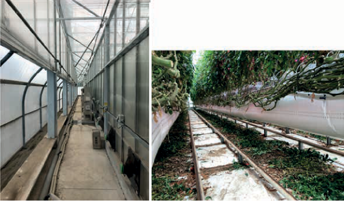
開發出其他的衍生應用方式，如圖4.46，導入局部冷卻作物植株的概念，外氣於空調室內冷卻處理後，再以送風機經風管配風至植株部位降溫，上升的熱空氣則經屋頂天窗出風口流出的陽壓通風。另如圖4.47針對台灣地區無天窗溫室的通風問題，利用風扇、風管強制排除近中央部位高溫空氣，促使外氣導入的熱排負壓機械通風應用。此外早期也有屋頂通風扇的利用，但因有增加屋頂結構載重、遮光產生陰影、通風面積小、氣流不易到達作物栽培區域等使用癥結，近來已較少見有應用的案例。
三、蒸發冷卻
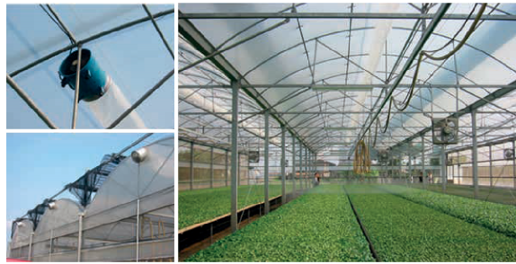
圖4.47 無天窗溫室熱排的負壓通風應用
溫室的冷卻方法有利用水的蒸發冷卻
力及水的吸熱力等方式，其中以蒸發冷卻為較實用的方式。如同濕球溫度量測的原理，當未飽合的空氣與溫度低於空氣的水產生接觸時，空氣提供蒸發潛熱，液態水相變為水蒸氣分子氣體，形成空氣本身熱量減少、溫度降低、濕度增加的現象。理論上於斷熱飽合的條件，利用蒸發冷卻原理可將溫度降低到空氣的濕球溫度，在溫室的降溫操作中，要求室內溫度低於外氣溫度時，通風以外，進一步必須配合水牆或高壓噴霧等蒸發冷卻的應用手段。對熱帶亞熱帶地區的溫室而言，相對使用空調機械，蒸發冷卻屬於較經濟的冷卻方式，夏季可將40 ℃以上的室內高溫降低到外

氣溫度以下，溫室將可預期全年的應用栽培，發揮充分日照的優勢，實現計畫性及高產量高品質生產的目標。
溫度，用以評估整體溫室的降溫性能，歸納水牆溫室熱量的取得與損失諸路徑， 式4.19的熱平衡方程式可改寫為 (中川，
（一） 水牆風扇法
水牆法)
(pad and fan，簡稱
1967)：
ARn+KD(TDB −Tin) + Cpρ(TpQ1 +
TDBQ2) − Cpρ(Q1 + Q2) − LE0 − AB = 0 (4.24)
使用負壓通風方式於入風口處設置水牆，在外氣通過水牆過程中與水牆上方流下的循環水產生接觸，蒸發冷卻後在水牆出口處形成較低的溫度Tp，乾球溫
上式中：
1
Tp： 水牆出口處空氣溫度 (℃) Tin： 風扇出口處空氣溫度 (℃)

(4.23)
TDB −TWB
η = TDB −Tp ×100%
度TDB℃、濕球溫度TWB℃的外氣通過水牆後，在水牆出口處的空氣溫度Tp由式4.23之水牆效率η決定：
Q ： 通過水牆進入溫室內的通風量 (m3/ min)
2
Q ： 從空隙進入溫室內的通風量 (m3/min)
水牆效率表示水牆冷卻性能， 受水牆構造 (厚度、面積、密實度等)、空氣流速及流下水量等因素之影響，一般出廠要求在75～ 85％以上。而對水牆溫室此一水牆出口處空氣溫度Tp，並不能代表整體溫室的降溫效能，空氣在水牆與風扇間的流動路徑中溫度逐漸上升，如圖4.48吸收進入室內的日射熱量，或從溫室空隙未經水牆蒸發冷卻進入的外氣熱量等，在風扇出口處的空氣溫度產生升高現象，形成水牆溫室特徵的溫度梯度。強制通風溫室的設計，使用風扇出口處溫度作為室內平均
由上式可求得，評估整體水牆溫室降溫性能指標的風扇出口處空氣溫度Tin：

(4.25)
Tin = ARn + KDTDB + Cpρ(TpQ1 + TDBQ2) − LE0 −AB
KD + Cpρ(Q1 + Q2)
要能提高水牆溫室的降溫性能，則必須維持Tin於較小的數值，水牆溫室的冷卻效果愈佳，觀察上式中，利用人為操作可左右Tin數值的參數有：
溫室的遮光
利用外遮光減少進入溫室的日射量
Rn，分子數值減小可得較小值的Tin。
減少空隙進入的外氣量
式中分子的Cpρ(TpQ1+TDBQ2)項，因
TDB>Tp，空隙進入的外氣量增加，則分子數值變大跟隨Tin值變大。通常空隙對風的阻抗小於水牆，強制通風下，空氣相對容易經由空隙進入的空氣量愈大，要能提高水牆溫室的冷卻效能，如何確保溫室的氣密性為一重要關鍵。一施工良好的溫室，仍可能有10～20％的空隙風滲入，對溫室容易產生空隙的構材接合等部位，須注意以填縫材料加強氣密性。
作物增加栽培密度
作物栽培量增加，蒸散吸收的潛熱LE0
增加也可減小Tin值，比較於少量作物的情況，相同溫室栽培多量作物能有較好的降溫效果。
流入通風量
若溫室具良好氣密性，假設Q2≒0，室
外空氣完全經由水牆冷卻後再流入室內，於式4.25中通常Tin接近外氣溫，透過壁面
及地面的傳遞熱量所占總熱量變化比例微少，為簡略計算可予以忽視，演算得下式：

(4.26)
Tin = Tp + ARn − LE0
CpρQ
上式在一外界氣象條件下，可利用人為操控通風量Q的大小而改變Tin。通風量過小Tin變大，溫室冷卻效果差，通風量過大設備及營運費用高，風速過大除降低水牆效率外，對作物生育也會有不良影響。而對氣候的變化如日射量Rn增加，須增加約相同比例倍數的通風量Q，才能得到日射量增加前相同的Tin。同理由該式可知，當水牆溫室的設計通風量決定後，因應外氣候變化的室內溫度，即可藉由調整通風量大小而控制。
水牆法的應用先決條件為溫室的氣密性，於熱帶亞熱帶氣候的應用，高濕環
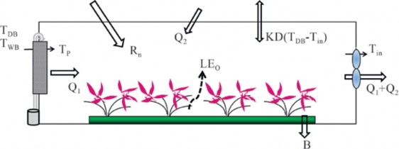
圖4.48 水牆溫室的熱量收支示意圖

境的乾濕球溫差小，水牆冷卻效果較不顯著，對容易形成高濕環境的地形地區，設
FL = L
488.5
置上須予審慎評估。另於強日照的氣候特性、無遮光的水牆溫室，或栽培玫瑰、番茄等蒸散小的作物，將Tin降至外氣溫以下，設計上需要大風量的換氣設備隨時運轉，基於營運成本的考量，外遮光為必要的配備，栽培作物的選擇也有所限制。水牆法的設備成本雖高於噴霧法，但具有簡易操作風量，可獲得穩定的室內溫度之優點，風量的設計可利用標準值設計法及熱平衡計算法。
標準值設計法
n
依據美國CAME 公司設計規範 (CAME手冊，1970)，溫室內日射量 R 為488.5W/m2時，於水牆出口處溫度為外氣濕球溫度＋1.5～2.0℃，排氣溫度高於水牆出口處溫度4℃的條
L＝室外日射量×溫室透過率
標準通風率以溫度梯度4℃為條件，設定其他溫度梯度ΔT 時，
FT = 4
∆T
總和修正係數 (FA) FA＝FH × FL× FT
標準值以30m長的溫室為對象，
5.5
D
當水牆與風扇距離D (m) 較短，為確保室內最低氣流流速，以下列係數修正。
FV
所要通風量 (Qm3/min)
Q＝溫室長×寬×2.5×FA
件下，以通風率q=2.5m3/m2min為標
當FV＞FA時，則Q＝溫室長×寬
準值。此標準值再依據溫室立地條件的海拔高度、光強度、溫度梯度及換氣距離等再予以修正。
×2.5×FV
理論上室內蒸發散量大小影響排氣溫
p = 760 − H
11
FH = 760
p
，
度的變化，在此標準值設計法忽視蒸發散量的影響，對照後項熱平衡計算之結果存有些微差異，但於實務應用上仍不失為一
H：海拔高度 (m)， p：當地平均氣壓 (mmHg)
簡易的計算方法。
熱平衡計算法
假設溫室為氣密良好狀態，室外空氣完全通過水牆冷卻後再進入溫室內，依據熱平衡方程式，可求得下式通風量計算式，
室內日射量Rn=980×0.65×(1−0.1)×
(1−0.5)=290W/m2
水牆出口處溫度Tp=33−(33−26.4)×0.8
=27.7℃
設計室溫Tin=30℃，蒸發散率ef=4g/ m2min

(4.27)
Q = ARn − LE0
Cpρ(Tin −Tp)
則由式4.27 計算可得Q=6,200m 3 /
利用式4.27，設計者首先決定日
射量、空氣乾濕球溫度等室外氣象條件，再依據室內栽培作物決定室內溫度及外遮蔭設備遮光率等設計條件。另Tp可由所選擇水牆的出廠水牆效率求得，蒸發散率ef=E0/A，夏天無遮光溫室內約為6～8g/m2min，有遮光時可依實際狀況酌減，按步驟求得各參數之數值代入計算，即可得所要通風量。
【例題】
寬度4m，平均高度3.5m，長度10m的塑膠布溫室，外氣條件為乾球溫度33℃，濕球溫度26.4℃，設計日射量980W/m2，透過率65％，反射率0.1
選用水牆效率η=80％，遮光網遮光率
s=50％
hr=103m3/min
一定的通風量下，水牆面積或厚
度愈大，空氣在水牆的通過時間愈長，可具有較佳的冷卻效率。乾濕球溫差小的熱帶亞熱帶地區，在不影響結構安全的原則，可於風扇相對側，地面上約50cm到柱高度的牆面間盡可能設置水牆，提高冷卻效率。
水牆上方流下的水量計算，首先

(4.28)
υ
E = Q ×(xs − x)
須由通風量及室外設計溫濕球條件求得理論蒸發量，以設計月平均最高溫度TDB，最高溫的平均相對濕度RH，利用濕空氣線圖求得絕對濕度x及xs，

上式中： E： 蒸發量 (g/min) Q：通風量 (m3/min)
ν： 比容積 (m3/kg(DA))
x ： 絕對濕度 (g/kg(DA))，xs：飽合絕對濕度 (g/kgDA)
以例題之通風量103m3/min，x=19.1g/ kg(DA)，xs=24.8g/kg(DA)，
ν=0.894m3/kg(DA)，求理論蒸發量可得，
≒ ≒
E = 103 ×(24.8 −19.1) 656g/min 11g/sec
0.894
若以理論蒸發量循環， 流下水量過少，水牆無法全面維持濕潤狀態，部分空氣由乾燥水牆部位流入，或水量過多，部分蒸發熱量使用於循環水的冷卻，均將導致冷卻效率的降低，流下循環水量的設計，視水牆面積大小，採理論蒸發量的50
～100倍為適當的範圍。對於循環水的溫度，在熱帶亞熱帶地區，使用低溫循環水可有助於提高冷卻效率，但從熱量傳遞的觀點，例如將25℃的水溫降到15℃ (25℃為 TDB=33℃，RH=63％的露點溫度，高出露點溫度的水溫即開始蒸發)，1kg的水與空氣接觸，以對流傳熱從空氣掠取約41.86kJ的熱量，而1kg 水量蒸發需從空氣掠取 2,500kJ熱量，造成空氣的冷卻，使用15℃的冷水升溫到25℃開始蒸發，冷卻力僅約增加41.86/2,500≒1.7％。溫室所在地能夠
取得充分的低溫地下水或其他水源，可稍提高冷卻效率，但若另須投資設備冷卻循環水，從經濟效益面考量並不具必要性，設計上可避免循環水溫度升高，注意循環水管路或水槽勿使直接日射，或將循環水貯水槽置於地面下利用地溫冷卻。
（二） 噴霧冷卻法 (fog and fan)
水牆法利用蒸發冷卻原理， 在外氣進入溫室前通過水牆，先行冷卻降溫後再流入室內。噴霧冷卻法 (圖4.49) 則為外氣以原來狀態進入室內，混合室內空氣，再以溫室內設置的高壓噴頭噴出微霧，霧粒在飄移過程吸收空氣熱量蒸發，造成空氣溫度降低，為溫室內直接進行蒸發冷卻的應用，因不須特別要求溫室的氣密性，也可運用於自然通風溫室作為降溫的處理方法。高壓噴頭噴出的霧粒，因重力慢慢往下沉降，在沉降過程中吸收周圍空氣熱量，霧粒自表面開始蒸發粒徑逐漸變小，如圖4.50高壓噴頭霧粒粒徑分布之例，小粒徑霧粒在到達地面時能完全蒸發，某些粒徑以上的霧粒未能完全蒸發，仍會以較小水滴狀態降落，霧粒完全蒸發的比例大小以蒸發比例β= 蒸發水量／噴霧水量表示。噴霧系統以設計的水量噴霧，在蒸發比例較小的情況下，除降低蒸發冷卻效果外，未完全蒸發的霧粒滴落葉面，也容易
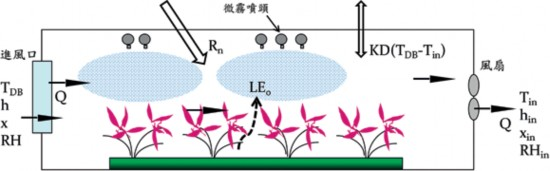
圖4.49 噴霧冷卻示意圖
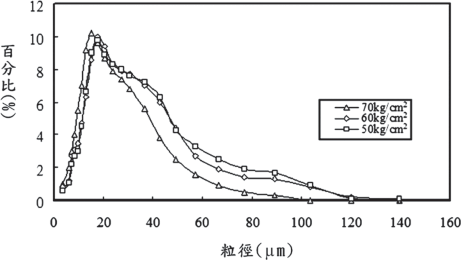
圖4.50 高壓噴頭霧粒的粒徑分布例
導致作物罹患病害，在噴霧系統的設計與控制，噴頭噴出的霧粒能否充分蒸發，為發揮冷卻效能的關鍵因素。
高壓噴霧使用35～40kg/cm2以上的操作壓力，噴頭噴出微霧大小粒徑的出現頻率，一般如圖4.50所示之分布趨勢。操作壓力加大，噴霧量會稍有增加，小粒
徑霧粒出現頻率也有增加的現象，但其效果並不顯著，霧粒霧化程度主要取決於噴頭構造及噴頭孔徑，目前市面販賣有不同孔徑型號的高壓噴頭，噴頭孔徑愈小霧化程度愈好，有助於提高蒸發比例，相對孔徑小容易造成阻塞，噴霧用水通常須先經過濾處理後使用。
霧粒自噴頭噴出後，在到達地面之前是否能夠完全蒸發，除霧粒本身粒徑大小的因素外，霧粒的沉降距離與沉降過程中霧粒周圍空氣的飽差具有密切關係，以一粒徑80μm的霧粒，在乾球溫度30℃，相對濕度50％的空氣中，完全蒸發的沉降距離約為1.5m，在乾球溫度 30℃，相對濕度80％的空氣，則須3.0m的沉降距離始能完全蒸發。為提高蒸發比例，噴頭架設高度希能滿足霧粒完全蒸發所要的沉降距離，而在溫室高度已受限制的情況，噴霧法通常必須配合室內循環風扇使用，藉由擾動室內氣流，帶動霧粒飄移延長沉降距離。在配合室內循環扇使用的原則，依據設計的噴頭數可於各棟中央柱高處平均分布配置，以水平稍往下方角度，前後噴頭左右交錯方向噴出，避免霧粒直接噴觸樑柱構材、塑膠布或植物體及葉片等固體表面。
室內空氣的狀態因通風或噴霧過程隨時變動，噴霧開始後空氣溫度逐漸降低，濕度提高，蒸發比例也隨著逐時遞減，溫濕度有較大幅度的變化。在自然通風
的溫室，間歇噴霧啟閉時間採用溫度或濕度控制的方式，若通風不良或噴霧時間過長，容易造成過濕的問題，後續濕度環境控制章節所述飽差控制，可改善此現象，室內空氣的溫濕度也能得到相對平穩的控制。
已知通風量的噴霧量設計
對一溫室若已知通風量，可依據熱平衡利用濕空氣線圖，計算室外設計溫濕度、日射量條件下所需噴霧量，再由所選擇使用的噴頭型號，求得設計噴頭數量。計算步驟如下例：
寬度4m，平均高度3.5m，長度10m的塑膠布溫室
外氣條件為乾球溫度33℃，濕球溫度26.4℃(RH=60％，x＝0.0191kg/ kgDA，h＝82.11kJ/kgDA，比容積＝ 0.894m3/kgDA)
換氣次數60次/hr，設計日射量980W/
m2，透過率65％，反射率0.1
熱負荷= 980×0.65×(1− 0.1)×4×10
=22,932W
通風量=60×4×10×3.5=8,400m3/hr
EV (g/kgDA) | 0 | 1 | 2 | 3 | 4 | 5 | 5.7 |
表4.8 室內蒸發量EV、排氣溫度DB、濕球溫度WB與相對濕度RH
DB (℃) 41.7 39.2 37.0 34.3 32.0 29.6 28.3
WB (℃) | 28.4 | 28.4 | 28.4 | 38.4 | 28.3 | 28.3 | 28.3 |
RH (％) | 37 | 44 | 53 | 64 | 76 | 90 | 100 |
設計外氣的比容積=0.894m3/kg(DA)，換算重量換氣量為8 , 4 0 0/ 0 . 89 4＝ 9,396kg/hr
熱負荷22,932W的條件下，單位重量通風量的焓增加，22,932/9,396＝ 2.44W/kg(DA)=8.79kJ/kg
排氣的焓增加為 82.11+8.79＝90.9kJ/ kg(DA)
先假設室內無水蒸氣量的產生，於濕
空氣線圖上標出x＝0.0191kg/kg(DA)， i＝90.9kJ/kg(DA)的狀態點，求室內蒸發水量=0的排氣狀態 (乾球＝41.5℃, RH＝37％)
將室內蒸發量增加1g/kg(DA)，求x
＝0.0201kg/kg(DA)的排氣狀態 (乾球39.2℃, RH＝44％)。同樣求室內蒸發量增加為2 、3 、4 ……之空氣狀態，結果列如表4.8 。當相對濕度達100 ％，蒸發量最大時可冷卻至28 . 3 ℃， 以RH＝ 90 ％ 為限度，蒸發量5g/kg(DA)(5.59g/m3)，排氣溫度29.6℃為室內設計條件。相對於140m3 /min之風量，總蒸發量為 5.59×140＝783g/min，此總蒸發量包括地面及作物的蒸發散量。依栽培狀況，假設室內栽培作物及地面的蒸發散率為6g/m2min，則整體室內自然產生的蒸發散量為6×40=240g/
min，其餘可以人工補充的蒸發量為
783−200=543g/min，若所選擇噴頭噴霧水為120g/min，霧粒的蒸發比例
β=80％，則一個噴頭蒸發量為96g/ min，所需噴頭數為583/96≒5.7，取整數於此例設計噴頭數為6個。
從上例計算的結果，換氣次數60次/h屬於通風良好的狀況，室內有栽培作物，室內溫度仍會高達37.2℃，相對濕度52％，此一環境下對作物而言可能因過度蒸散，導致氣孔關閉而停止光合作用，形成非生物性逆境。熱帶亞熱帶的溫室，在強日照的情況，單純通風仍無法避免產生高溫的現象，必須進一步藉助外遮光減少熱負荷，或高壓噴霧帶走多餘熱負荷，以維持作物正常生理作用的溫濕度環境。
製作VETH線圖的設計
通風量未知的溫室，噴霧量的設計可依據三原 (1980) 所提案，依據噴霧溫室的熱平衡，對一設計室外氣象條件，利用濕空氣線圖求出通風率 (V)、室內蒸發散率 (E)、排氣溫度 (T)、相對濕度 (H) 的相互關係，繪製成VETH線圖，設計達到室內溫濕度需求所要的通風量及噴霧量。如圖 4.51，室外空氣的焓為h(kJ/kgDA)，排氣焓為hin(kJ/kgDA)，

(4.29)
hin = h + Rn − (Tin −TDB)kw
ρq
n
式中，R ：室內淨輻射 (W/m2)
ρ： 外氣比重 (kg/m3)
TDB： 外氣溫 (℃)，Tin：排氣溫 (℃)， ΔT= Tin -TDB
k：外壁面熱傳遞係數 (W/m2℃)，通常玻璃為5.8，塑膠布為6.8
w：外壁面積／地面積，1.2～1.8，通常約為1.5
上中代入已知Rn、k、ρ及任一通風
圖4.51 通風率qn下的hin線
其次，再由下式計算各TH線上各溫濕度的總蒸發散量E值。
率q1 m /m min，分別計算ΔT=0℃及
E=(xin −x)qρ (4.30)
3 2
ΔT=10℃二種情況下的hin，如圖4.51將所求得二個hin值分別標記在濕空氣線圖上，其所連結的直線即為通風率 q1的hin線。圖中A-B間的hin線，即表示在q1通風率所有可能得到排氣溫濕度的組合。A點表示室內完全無蒸發散情況下的溫濕度，B點則為蒸發散十分旺盛，排氣濕度100％達到飽和情況下的溫濕度。讀取此hin線分別與相對濕度RH100％、90％、80％……交叉點的溫度T，再將T與H的座標標記在TH線圖上，連結各點即可描繪出q1的TH線。同樣的步驟，再分別對q2、q3、……qn等不同通風率，可繪製n條的TH線。
xin： TH線上各點的絕對濕度，x：外氣絕對濕度
分別標記所計算TH線上各溫濕度的E值，再用內插法將等E值的點連結成線，或以整數的E值，代入計算求得 xin，再由hin的交點求出對應溫濕度。依此步驟完成的VETH線圖，表示在某一設計室外氣象條件下，溫室內所有可能發生的VETH組合，均在此線圖範圍內變化，若室外氣象條件改變，須按相同步驟重新繪製VETH線圖。對一設計外氣象條件，繪製完成的 VETH線圖，可用以決定設計室溫的
圖4.52 VETH線圖－無遮光及50％遮光
必要通風率及噴霧量，或推估自然通風溫室的通風率及蒸發散量。於相同 VETH線圖室外氣象條件，同時量測得到的室內溫濕度，標記於圖4.52上如①例之△點，可得通風率為2.0m3/ m2min，蒸發散率為8g/m2min。一般連棟自然通風溫室的換氣次數約在 30～40次/h的範圍，換算通風率約為1.5～2.0m3/m2min，夏季室內自然的蒸發散率約為6～8g/m2min，圖例
①△點可代表台灣地區夏季自然通風溫室內，空氣溫濕度經常出現的狀
態，若外界風速較小，或溫室連棟數增加伴隨通風率變小，則很難避免形成40℃以上高溫的現象。為抑制過度高溫的外遮光處理，如圖②例，蒸發散率因遮光減少，相同通風率下溫度則可降2～3℃，但仍容易處於高溫的狀態。於通風率2.0m3/m2min時，圖①例中△點蒸發散率為8g/ m2min，室內空氣溫濕度為37.5℃， 56％，若將蒸發散率增加到□點的
15.8g/m2min，則室內空氣溫濕度調整為31℃，90％，其中15.8−8=7.8g/
圖4.53 蝴蝶蘭空調催花室

m2min的蒸發散率增加量，可以利用人為補充蒸發實現，此為噴霧冷卻噴霧量設計之依據。
對目標溫室，若地面及作物的自然蒸發散率Ef，設計全蒸發散率為E，則
補充蒸發散率Es=E−Ef，整體溫室的噴霧量W(g/min)為，
W=AEs /β (4.31)
式中，A：溫室地面積 (m2)，β：霧粒的蒸發比例
以圖4.52 ①□點31 ℃， 90 ％為設計室內溫濕度，溫室面積為一分地 (1,000m 2 )，蒸發比例β=0.8 ，
W=1,000×(15.8−8)/0.8=9,750(g/
min)。若選用粒徑較小噴頭並配合室內循環扇，蒸發比例β可提高至0.9以上，W可減少為8,600g/min，以選用
噴頭的噴霧量為120g/min，一分地所須噴頭數目為8,600/120=71.7，可得設計噴頭數目=72個。目前市販蒸發冷卻用的微霧噴頭型號規格眾多，一般噴霧量較大的噴頭，大粒徑難以氣化的霧粒比例相對也多；容易氣化小粒徑的噴頭，相對噴霧量減少甚多，增加噴頭使用數量，水質差也較容易產生阻塞，使用者可以評估作物對未完全蒸發霧粒降落葉面的容許程度選擇使用。在噴霧量的設計上，台灣地區熱帶亞熱帶的氣候型態，自然通風溫室利用噴霧的蒸發冷卻降溫，一分地的噴霧量可大略取8～9L/min為設計標準，在夏季強日照的時刻，無遮光的溫室可維持於不致過度高溫的 31℃左右，配備外遮光設備的溫室則可降到30℃以下。運用噴霧冷卻可以相對經濟的方式，調整室內溫濕度滿足作物正常生長需求，增加栽培作物品項的選擇性，於熱帶亞熱帶地區的充足日照的先天條件下，可發揮栽培優勢，提升夏季溫室的利用效率。
四、熱泵
如前所述， 利用蒸發冷卻雖可將溫
圖4.54 地下水熱源熱泵機組與送風機組
度降到外氣溫以下，但約以高於外氣濕球溫度2～3℃為降溫的限度，溫室內溫度有低於此限度之需求，進一步必須採用冷氣機或熱泵等機械空調的方式。在日射熱負荷大的晝間，利用空調降溫需要大容量設備及營運費用，通常無法符合栽培經濟效益，目前侷限於部分遮光的蝴蝶蘭溫室，或一些特殊栽培目的使用。蝴蝶蘭的生產為調配產期，在低海拔地區早期既有於栽培溫室內，區隔一空間作為催花室 (圖 4.53)，利用冷氣機設備製造花梗抽出，花芽形成需求的日夜間溫度。近來也有業者開始使用熱泵設備，控制整體栽培溫室的溫濕度，熱泵分有以地下水或空氣為熱源種類，利用冷媒蒸發、凝結的循環過程，可將熱量由低溫側往高溫側輸送，操
作改變冷媒的流動方向，同一設備可作為冷卻、加溫及除濕等不同處理目的使用。地下水熱源的能源效率 (EER) 較高，目前蝴蝶蘭溫室的熱泵一般採用地下水熱源，製造冷風後再以送風機吹送至溫室內 (圖 4.54)。此外在植物的生育過程，莖、葉、花、果實等不同器官對溫度具有不同的反應，於荷蘭及日本等園藝先進國家倡導
「次世代栽培」的新生產系統，為提高能源使用效率，使用外氣熱源的小型熱泵，製造冷風或冷水，分別以風管或冷水管輸送至植物根部、生長點等對象部位，施行局部溫度管理的方式，在日後累積充足此些器官與溫度的關聯知識後，可為熱泵應用的技術發展方向。

五、保溫
保溫處理為降溫的反向操作， 在熱
量傳遞的路徑上抑制熱量往室外的散失，將溫室既有的熱量盡量保存在溫室內，維持室溫防止形成過低的溫度。在一無加溫溫室的熱量傳遞路徑中，晝間地表面吸收太陽光熱量，部分熱量往下傳遞蓄熱於地面下土層，夜間蓄積熱流往上放熱到溫室內，為夜間溫室內熱量的來源，因此保溫處理主要目的在於減緩透過被覆材料傳遞熱量，及溫室孔隙換氣傳熱量等兩者的熱量損失。對此於寒帶地區，發展有雙層塑膠布充氣溫室，雙層板或壁面夾層保麗龍球粒充填式的保溫型溫室，藉由減小溫室表面被覆的熱傳遞係數，並減少溫室孔隙，達到減少熱量損失的保溫效果。然此類溫室使用於熱帶亞熱帶地區的溫室，相對形成通風的限制，春夏季容易導致室內過度高溫的現象，在短暫低溫期的保溫，通常採用圖4.55之保溫幕，在室內天井下方或側壁架設塑膠布的處理方式，利用保溫幕及形成被覆表面間的空氣層隔熱，增加保溫效果。
室內空氣經由被覆表面及換氣產生熱量損失外，溫室內土壤、葉面及被覆等固體，也會以紅外線長波輻射的形式，往室外釋放出熱量，此現象於秋冬季晴朗夜空尤其顯著，對一些小型溫室地溫熱量若不
圖4.55 保溫幕
足補充，因此輻射冷卻效應，甚至可能造成室內氣溫低於外氣溫的「溫度逆轉」情況。熱帶亞熱帶地區溫室，可在低溫期夜間善加利用遮光設備，減緩長波輻射，防患地面土壤或作物體形成溫度過低狀況。遮光網的保溫效果，因材質的透過率、吸收率及反射率而有差異，其中以銀白色反射率高的遮光網效果較佳，架設方式則為內遮光>屋頂面遮光>外遮光。另外，在室內搭配利用簡易資材，如地面覆蓋維持地溫，防蟲網、不織布的葉面上直接浮動覆蓋，或架設隧道棚，減緩地面熱量流失及葉面輻射，可作為防寒保溫的措施。
六、加溫
寒帶地區的設施園藝，加溫為環控技
術中最基本且普遍應用的項目，於熱帶亞熱帶地區的氣候型態，迫切性不如降溫顯著，但於冬季短暫的低溫期，對蝴蝶蘭等
圖4.56 熱風加溫機與送風管
加溫方式 | 加溫效果 | 控制性 | 設備成本 | 使用溫室 |
表4.9 熱風加溫與熱水加溫之使用特性比較
熱風加溫
預熱時間短，操作停止後溫度快速下降，溫差變動大。
通常型式為ON/ OFF作動，操作簡易，燃燒空氣取自室內時必須換氣補充外氣。
熱風機溫機及塑膠布風管，設備成本較低，加溫期間長或大型溫室燃油費用大，非加溫期可移除，溫室作業影響較小。
所有溫室。
熱水加溫 | 預熱時間長，停止後熱水管存有餘熱 | 入水口熱水溫度可因應暖防負荷變動 | 鍋爐及室內配管，建置成本較高，相對熱風加溫鍋爐燃油費用 | 種苗等高級作物或大規 |
可持續加溫，溫度 | 調整，需依據複雜 | 較少，或可採用生質能或再生燃 | 模溫室。 | |
緩慢下降，溫差變動小。 | 計算控制。 | 料，營運成本較低，熱水管為固定設備，溫室的作業性較差。 |
高經濟性或低溫敏感的作物，仍有加溫的需求。加溫以人為設備製造熱源方式補充熱量，分有熱風、熱水、蒸氣、電熱及熱泵等種類，目前以熱風或熱水為較常使用的加溫方式，熱風加溫使用熱風加溫機，啟動燃燒裝置將溫室內空氣直接加熱後，再利用風管配送到加溫的溫室部位 ( 圖 4.56)。熱水加溫為間接加溫方式，溫室內
配置熱水管路，利用鍋爐將水加熱後，在溫室熱水管入水口處，控制鍋爐高溫熱水與熱水管回流低溫水的混合比例，因應負荷變動調整至60～80℃的水溫後流入室內熱水管，室內空氣及作物體再以對流、輻射方式吸收熱水傳遞到管壁的熱量，兩者可區別如表4.9之使用特性。
因設備費用低，操作簡易，熱帶亞熱
帶的溫室較常採用熱風加溫作為短期間低溫的加溫方式，於此僅敘述熱風加溫的設計概要，熱水加溫或其他方式的設計，可參考相關專業書籍。
（一） 熱風加溫機容量計算
熱風加溫機的設置容量，經由計算暖房負荷Qg(W) (岡田，1980) 求得。
Qg =AU(Tin − Tou) ∙ fr (1+r) (4.32)
A： 溫室表面積 (m2)
U： 暖房負荷係數 (W/m2℃)，玻璃溫室
=5.3，塑膠布溫室=5.7
Tin： 設計室內溫度 (℃)，加溫期間溫室所
（二）風管
熱風加溫機產生的熱風，通常使用價格較低的塑膠布風管，熱風加溫機熱風出口處大直徑主管輸出，再以小直徑支管連接主管輸送至溫室加溫部位，加溫機與風管的配置上盡量要求溫室內能有均一的溫度分布。塑膠布風管的直徑大小，依熱風加溫機的送風量選用，送風量愈大，相對風管斷面積也須加大。熱風輸送到支管後，從支管挖設的送風口吹送出溫室內，為避免支管後端因風壓下降，造成各送風口出風量不均的現象，要求Σa/A≦1，A為支管斷面積，a為送風口面積。熱風加溫機作動時，加溫機出力10,000kJ單位，約需 5m3的燃燒空氣，在加溫溫室處於較密閉的
要維持的溫度目標，通常取作物適溫範圍的下限值
Tou： 設計室外氣溫 (℃)，參考溫室附近氣象站資料，除高級作物或耐寒性極差的作物，考慮設備使用的經濟效益，採較短期間再現頻率 (10年以下) 的最低溫度
fr： 修正係數 (-)，依風管設置位置調整暖房負荷，一般風管直接設置於地面的情況，取0.9～1.0
r： 安全係數 (-)，通常取0.1
狀態，容易因不完全燃燒產生有害氣體，可使用PVC管設計成吸氣管，從室外導入新鮮外氣送至燃燒器位置作為燃燒空氣使用。

第五節 濕度環境控制
溫室內空氣的水蒸氣分子量， 在時刻變化的氣候條件下，綜合作物的蒸散、溫室內水面 (灌溉或土壤水分) 的蒸發、室內外空氣交換及被覆、作物等固體表面的凝結等路徑產生的水分流增減，造成濕度高低的變動。溫室內空氣過高或過低的濕度，栽培作物容易導致生長逆境、生理障害或病害，濕度管理的重點即在於控制作物正常的氣孔開閉與病害的發生。對於氣孔開閉的機制，雖然至目前的研究尚未完全解析，但已知空氣的溫度、濕度影響極大，在一溫度下的未飽和空氣，具備容納其他多餘水蒸氣分子的能力，其能力大小由該溫度的飽含水蒸氣含量與空氣水蒸氣含量的差值決定，此一差值分別有利用水蒸氣壓差VPD (vapour pressure deficit，單位：hpa, kpa, mbar )，或飽差HD
(humidity deficit，單位：g/m3) 的表示方式，VPD使用單位繁多不一，從控制噴霧水量等濕度管理的工程計算角度到……，飽差HD相對具有較佳的使用便利性，為避免混淆於此章節採用飽差方式敘述。作物葉面氣孔負擔蒸散及吸收光合成原料CO2的機能，日照下作物從氣孔內 (RH=100％)的水分蒸散速度，因氣孔周圍空氣的飽差
大小變動。過大飽差則蒸散速度過大，若根部吸收水分補充不及，作物本身保護機制下，感應到作物體內的水分損失過多，氣孔即行閉鎖。氣孔一但閉鎖後，再度完全開啟需要2～3hr，這段時間內因缺少CO2原料的供應，光合成將停止或緩慢進行。同樣因氣孔閉鎖，停止蒸散作用造成葉面溫度升高，產生如葉面黃化等生理障害。飽差過小氣孔雖然維持開啟狀態，而因蒸散速度小葉面內水分過多，CO2的擴散速度變緩導致光合成減少。另外造成植物甚多病害的黴菌，在飽差小即高濕的環境下黴菌胞子分生旺盛，作物長時間置放於高濕環境，容易罹患葉黴病或灰黴病等病害。
空氣在相同的相對濕度，溫度升高則飽差變大，在濕度的管理上必須綜合溫度的變動因素，執行溫室內空氣適當的飽差控制。但飽差值目前無感測器可直接量測，使用便宜的溫度及相對濕度計，簡單量測乾球溫度及相對濕度後，利用濕空氣線圖，或經由下列的計算步驟求出。
相對濕度=RH(％)、乾球溫度=T℃，
Tetens方程式計算T℃的飽和水蒸氣壓e(T) (hPa)
e(T) = 6.1078 ×10(7.5T /(T + 237.3))
水蒸氣狀態方程式計算飽和水蒸氣量
a(T) (g/m3)
e(T)
差範圍各有差別，綜合文獻資料，一般以
3～6g/m3為較適當範圍，1.5～3g/m3及6～
7g/m3為可容許的範圍，在熱帶亞熱帶的
a(T) = 217 ×
(T + 273.15)
氣候下，若不使飽差在短時間內產生急劇
代入相對濕度RH計算飽差HD (g/m3)
a(T)
變化，一般飽差大於7以上，也不致構成問題。於栽培現場作物長期處於3～6g/m3
HD = (100 − RH)×
100
的高濕環境，如番茄容易因蒸散量減少，
經上述步驟計算，將不同溫濕度的飽差列於表4.10，不同作物或時段的適當飽
表4.10 HD飽差表
產生根部吸水、吸肥能力遲鈍，葉片變大變薄營養生長過多，罹患灰黴病、疫病病
害風險較高等問題，也有建議日出後2～ 3hr，促進葉的蒸散，提升根的活化性，設定為10～12g/m3，9～15點時段，促進光合成設定為6～9g/m3，午後3點後停止噴霧，調回較高飽差的控制方式 (吉田，2016)。而執行飽差的自動控制，控制設備必須具備程式演算的功能，使用無演算功能控制器的栽培業者，可善加利用飽差表，因應氣候變動預報資料，運用既有遮光、捲簾通風等環控設備，避免飽差產生急劇變動，並對應日射量及蒸散量施行土壤水分與灌溉控制，妥當管理溫室內溫濕度。溫室內的飽差無法完全控制，產生過大或過小的情況時，可藉下述環控設備的管理操作予以調整改善。
一、飽差過大的濕度管理操作
飽差過大除容易造成氣孔收縮或閉
鎖，減少光合成產物外，對番茄等瓜果類作物，因各器官蒸散速度的差異，老葉蒸散速度大，根部所吸收水分集中往蒸散旺盛的老葉輸送，相對新葉與果實蒸散少，吸收水分較不易到達，形成水分分配不均而容易產生缺鈣的生理障害，此現象於夏季陰雨後的放晴氣候，飽差快速增大的情況下尤其顯著。飽差過大的情況，可運用灌溉、遮光及噴霧等措施減小飽差。
（一） 灌溉
強日射高溫條件下，以低EC灌溉水增加灌溉水量或次數，促進作物充分吸水充分蒸散，藉由自由水的蒸發及作物蒸散增加水蒸氣分子，及蒸發散的潛熱轉換減少熱量降低飽差。
（二） 遮光
利用外遮光排除進入溫室內過多的熱量，降低空氣溫度減小飽差，並限縮到達葉片熱量，減緩葉片的過度蒸散。
（三） 噴霧
同時達到空氣的加濕及冷卻，降低飽差維持氣孔開度，可於充足日照下促進作物的光合成。在台灣夏季的強日照下，如蒸發冷卻章節所述，運用噴霧可將無遮光溫室內降到31℃、90％程度，對照於飽差表處於飽差的適當範圍內，可據以增加栽培作物品項的選擇性，提高夏季溫室的使用效益。另在噴霧的控制上，以溫度或濕度作為ON/OFF作動策略，均具有高飽差時噴霧不作動，及作動後飽差變動過大的風險，空氣於相對濕度較大的狀態，採用溫度控制容易產生過度高濕的問題；採用濕度控制時，對較高溫的空氣狀態，則有降溫程度不足的現象，直接採用飽差作控制依據，可改善噴霧過多或不足之缺失，飽
差也有較平穩的變化。
二、飽差過小的濕度管理操作
飽差過小較常發生於夜間低溫或夏季
陰雨時期，飽差過小蒸散減少，容易引起葉片變大變厚、莖變粗、根系貧弱、易罹患病害及缺鈣生理障害。在飽差過小的情況，可運用加溫、通風及室內空氣循環等措施增大飽差。
（一） 加溫
加溫為寒帶地區溫室普遍使用的除濕方法，冬季晝間同時啟動小量通風及加溫，加溫維持適當溫度並藉通風去除濕氣。夜間加溫上升空氣直接接觸塑膠布被覆，在塑膠布內側可產生大量結露水，再引導至水槽排出，但外界空氣溫度高時，結露較難產生，仍須使用晝間除濕方式。
（二） 通風
一般情況下，溫室內空氣的絕對濕度高於外界空氣，促進通風增加室內外空氣的交換量，排除室內過多水氣，為極有效的除濕手段。於清晨開啟側窗捲簾通風，一次全面開啟時，可能造成飽差急速變化的情況，可設定時間分2～3階段開啟，另於低溫期須注意外界冷空氣進入室內時，避免直接吹到作物體部位，及過大通風量導致室內空氣形成過度的低溫，具有上下兩段式側窗捲簾裝置者，以開啟上段部捲簾為優先條件。
（三） 室內空氣循環
室內空氣沉滯時，葉片周圍的空氣境界層厚度增大，境界層的空氣濕度高於室內空氣，利用通風或室內循環扇帶動室內空氣流動，減小境界層厚度，補充新鮮乾燥空氣，可促進光合及蒸散作用，並減低罹患高濕導致病害的風險。

第六節 CO2環境控制
栽培的最終目的在於提高作物的產量與品質，作物的產量及成分絕大部分來自光合成產物，CO2為光合成最直接的原料，在熱帶亞熱帶充足日照的優勢條件下，如何配合光環境及溫濕度控制，提供足夠且充足的CO2濃度，達到光合成最大化，實現增加產量及提高品質栽培目標，為今後溫室環境控制的關鍵技術。不僅於強日照的天候，甚至在低日照的情況下，從諸多的應用實例結果，已驗證溫室內提高CO2濃度具有相對的使用經濟效益，在荷蘭、日本地區的溫室，CO2施用已為普
遍應用的技術，荷蘭主要使用燃燒天然氣裝置，或加溫過程鍋爐產生的CO2，作為 CO2施用來源。日本則常使用圖4.57的液態鋼瓶，經釋壓後轉換為CO2氣體流入室內，或圖4.58的CO2產生裝置，使用燈油燃料產生CO2，冷卻後用送風機經送風管路，再配送至施用部位。
2
溫室內改變CO 2 濃度增減的因子包括：土壤中微生物分解有機物的CO 2 產生、作物光合成的消耗、通風產生的補充或流失，溫室內CO2施用時，所要追加的 CO 施用量R (g/m2hr) 可列如下式 (三原，
圖4.57 液態CO2鋼瓶的CO2施用
圖4.58 CO2產生裝置及塑膠送風管的CO2施用


(4.33)
A
R = V N(Ci − Co) + Pn − S
1980)：
i
2
C ： 溫室內CO 施用目標濃度，g/m3
CO2分子量=44g/mol
土壤呼吸量S為溫室內CO2的產生量，因土壤內微生物的活性及有機物含量具有大幅差異，土壤環境適宜微生物活性處於最高的狀態下，土壤呼吸量約達0.2～0.3g/
o
2
C ： 外 氣 CO 濃 度 ，g/m3 m2hr， 而 溫 室 內 經 常 採 用 的 離 地 栽 培 、 地
N： 換氣次數，次/hr
n
P ： 溫室內作物的光合成吸收量，g/m2hr S： 土壤呼吸量，g/m2hr
A： 溫室地面積，m2
V： 溫室體積，m3
式中濃度單位為g/m3，與一般ppm濃度單位可由下式計算轉換，濃度 (mg/m3)
=0.0409×ppm×氣體分子量
面覆蓋或養液栽培等栽培型式，則為極少量或無土壤呼吸量的產生。溫室內作物的光合成吸收量Pn，也因作物品項，及環境控制差異而改變，如番茄於採收期一株吸收量約為3g/m2hr，以一分地栽培1,200株為例，即1小時必須吸收3.6kg的CO2，若使用飽差管理方式，吸收量約可增加到2倍的7.2kg左右 (齊藤，2015)。通常土壤呼吸
所產生的CO2量，遠低於作物光合成要求的CO2吸收量，不足部分必須利用通風從外氣或人為方式製造的CO2施用補充。CO2施用方式可將室內CO2濃度提高到外氣濃度Co以上，控制上一般因應日射量大小改變CO2施用量，在日射量較大的晴天或正午，按日射量增加幅度提高CO2施用量。在施用的CO2量中，提供作物光合成使用比例的最大影響因子為溫室的通風，寒帶地區高度環控的溫室，氣候型態下溫室可維持於較高的密閉性，施用高於外氣的 CO2補充，因換氣次數N小，相對僅有少量的CO2流失，所施用的CO2絕大部分可作為作物光合成Pn使用。熱帶亞熱帶以自然通風為主流的溫室，換氣次數大，補充高於外氣濃度的CO2施用，勢必產生大量施用 CO2流失的結果。而對自然通風溫室實際量測室內的CO2濃度分布，特別於栽培番茄、小黃瓜等直立式瓜果類栽培溫室，雖處於通風的狀態下，白天在通路或植冠間的CO2濃度經常可量測到低於200ppm以下的情況，雖徒具有充足日照，限於CO2原料不足，作物仍呈現低光合成的狀態，為提高產量與品質仍有CO2施用的必要。為使施用的CO2能夠盡量提供為作物的光合成用途使用，對此類自然通風溫室的CO2施用，採用相同於外氣CO2濃度的補充，亦即將室內施用目標濃度設定為相同於外
氣的CO2濃度400ppm (Ci=Co)，可避免施用的CO2因濃度差而擴散流失。自然通風溫室此一相同於外氣CO2濃度的低CO2濃度施用方法，稱為「零濃度差CO2施用」。於自然通風溫室內的CO2施用，為能得到均一的CO2濃度分布，自CO2產生裝置或液態 CO2鋼瓶等CO2來源，使用透浦式送風機連結塑膠風管，導引CO2配送至作物各栽培部位，再由塑膠風管上開設的小孔吹出。風管原則上配置於離通風開口較遠處，溫室中央附近區域的各畝間植株下方，施用時間可於日出後約1～2hr，到日沒間葉片氣孔充分開啟的時間帶內，當室內CO2濃度開始低於400ppm，即可啟動施用。
CO2施用注意事項
一、 光照強度、葉片和周圍空氣溫度、相
對濕度、缺水逆境以及大氣和葉肉細胞中的CO2濃度是決定氣孔開啟和關閉的諸多關鍵因素。當日照增強時，葉面溫度升高，促進蒸散作用加快，最後卻因水分過量損失而導致氣孔關閉，光合作用速率下降。CO2施用時，須配合室內空氣的飽差管理，以維持氣孔正常開啟，達到CO2施用效益。
二、 水與CO2同樣為光合成的直接原料，在配合飽差管理的CO2施用，隨著作物光合成速率變大，水分需求量也增
大，相對必須增加灌溉水量，同時也必須配合增加適度的施肥量。
三、 CO2施用時，一般利用簡易的CO2感測器量測室內CO2濃度，對此些CO2感測器必須作定期的校正，避免量測值的偏差。對量測值產生懷疑時，可先量測外氣CO2濃度值，再以其量測的濃度值作為控制依據，使室內濃度不低於外氣下施用。另外，依據感測器的 CO2濃度控制，容易形成CO2產生裝置開關頻繁作動的情況，對自然通風溫室，難以執行精確的零濃度差CO2施用控制。於此情況可改採施用量控制方式，計算每小時單位時間的施用量
後，利用定時器時間間隔分次平均施用，並以感測器確認室內濃度變化狀況，若觀察到容易產生低於外氣濃度的時段，可於該時段縮小間隔時間，增加施用次數 (齊藤，2015)。
四、 冬季低溫期通風量較小時，CO2施用可能獲得高於外氣100～200ppm，維持室內於500～600的CO2濃度，施用高於此濃度則可能產生大量流失，高於外氣CO2濃度的施用，須隨時確認通風量與室內CO2濃度變化的關係，妥善管理通風開口的開放面積，避免過多施用CO2流失。

第七節 氣流環境控制
溫室內要求空氣具有一流速的循環流動，藉由空氣的循環流動，除能夠使溫室內的溫度分布均一外，作物葉片周圍的空氣流動，具有促進作物蒸散及光合成的效果，及其他多項衍生栽培效益。作物葉片為固體，空氣為流體，流體接觸固體表面流動時，因黏滯力產生在緊接葉面周圍形成一靜止空氣層的流體現象，此靜止空氣層稱為境界層。如同水在水管內的流動，水管中央位置的流速最快，愈接近管壁流速逐漸減慢，在緊接管壁處形成一靜止不流動的境界層厚度，境界層厚度當流速減小，有厚度增大的現象。溫室內無風，葉面周圍空氣不流動時，葉片表面將形成厚度較大的境界層，隨著作物光合成與蒸散作用的進行，相較於溫室其他空間的空氣，葉面周圍境界層內的空氣形成CO2濃度較低，水蒸氣量較高的狀態，空氣往葉內的CO2擴散抵抗增大，水分從氣孔的蒸散降低，減緩光合成及蒸散速度。增大葉面周圍的風速，葉面境界層厚度變小， CO2的擴散量與水分蒸散加大，具有促進光合成及蒸散作用的效果。葉面周圍的風速要求<0.5m/s，於空氣飽差較大的狀態時，風速>0.5m/s則可能因過度蒸散，導致
氣孔收縮或閉鎖，造成光合成減少的反效果。一般良好通風的條件下，葉面周圍自然可產生空氣的流動，此情況外則必須藉助室內循環風扇設備，擾動室內空氣的循環流動，形成葉面周圍的風速。目前市販的室內循環風扇種類甚多，有如圖4.59之垂直型室內循環風扇，室內空氣由底部吸入，再從上方出風口吹出的方式。一般溫室常使用16"～22"的農業用小型內循環風扇，依據溫室的大小規模，以圖4.60所示的原則平面配置，吊掛於方便施工的橫樑下方處，在溫室本身既有溫度差產生的自然垂直對流，循環風扇平面擾動空氣流動後，因自然與機械動力的加乘效應，室內空氣自可形成三次元的循環空氣流場。
溫室配置室內循環風扇後，循環風扇
圖4.59 垂直型室內循環風扇

能以24小時作動為理想狀況，實際上終將招致過高電費的結果，在節約電力並充分發揮效能的前提，下列時間點必須強迫室內循環風扇的運轉。
一、日出前後
空氣因容積比熱小， 日出後室內空
氣溫度快速上升，相對葉面及果實等固體溫度上升較慢，當固體表面溫度在空氣的露點溫度以下時，溫度高的空氣接觸露點溫度的固體表面，立即產生結露現象。日出前後的空氣流動，可促進葉面、果實及被覆材與空氣的對流傳熱，減小溫差避免結露的生成，縱使有結露水的產生，流動空氣也可加快吹乾，防止因高濕造成的病害。另外，日出時也為室內空氣垂直對流最旺盛的時機，作動室內循環風扇，對番茄等需要授粉的作物，可衍生促進風力授粉提高結果率的效益。
二、噴霧前後
利用高壓噴霧的溫室，啟動噴霧前後
必須設定數十秒或數分的延長時間，強迫運轉循環風扇，藉由空氣流動增加霧粒飄移距離，促進霧化提高冷卻效率，並減少未完全蒸發霧粒掉落葉面的風險。
三、白天通風量較少，空氣沉滯時
因外氣候條件白天通風量少，或溫室
內植株等空氣流動障礙，致使空氣形成較沉滯的情況，室內循環風扇必須適度的運轉。在此條件的循環風扇作動，須注意室內空氣的溫濕度狀態，若空氣處於高溫、低濕的飽差過大狀態，葉面周圍的風速將加快氣孔水分的蒸散，可能導致氣孔收縮或閉鎖的風險，高溫情況下的循環風扇運轉，要求先能加濕空氣到相對濕度75～ 85％，以維持氣孔正常開啟，促進作物光合成。
四、夜間高濕時
空氣長時間處於不流動高濕的狀態，
作物容易罹患灰黴病、葉黴病或疫病等病害，於夜間空氣處於高濕的時段，可於每小時內設定十數分的循環風扇強迫運轉，減少植株罹患病害的風險。
圖4.60 室內循環風扇配置方法。(整理自Bartok et al., 2007)


第八節 灌溉控制
土壤與介質水分控制的目的， 在於構成及維持作物所適宜之水分環境條件。水分控制的規劃與建置須能充分提高其效益，例如灌溉水量要能維持土壤與介質水分在作物生長有效水分範圍內，並達到省工、節水栽培的目的。原則上，依土壤或介質水分特性，以及作物水分消耗特性，决定控制策略與硬體設施的配置。其中，由作物種類決定灌溉水量及頻度，並調查土壤或介質水分與控制策略，為土壤與介質水分控制最主要的方向。
灌溉系統包含控制器 (定時器、控制閥體：電磁閥、減壓閥、三頭閥)、感應器 (土壤濕度感測器、雨滴感測器、pH、 EC)、過濾器 (網式、碟片式、離心式)、管路 (滴頭、滴箭、噴頭、滴灌管、PE管、注肥器、文氏管注肥器、定比式加藥器、接頭) 等設備資材。
一（一、）灌噴溉灌方法法之種類及特色
將水抽到儲水桶裡， 讓污物沉澱到底部，抽取上層的水，噴水管灌溉系統若噴孔非常微小或水中雜質太多，則需要安裝過濾器。在露天噴灌方面，灌溉設備鋪
設於地面，噴灌裝置向上噴灑後，以細霧般均勻灑落；在覆蓋膜下噴灌方面，安裝於覆蓋膜下的噴滴灌，由於塑膠膜覆蓋作物灌溉區域，減少灌溉水蒸發，較節省用水、省肥；在離地型噴灌方面，懸掛於作物上方或側邊，方便人員或機具在田間作業，水從懸掛處噴灑落下均勻的細微水花，因安裝簡單容易，因噴頭位處於高處且孔徑較大，噴頭容易更換，滴水量較滴灌提高許多，具有不易塞孔等優點，適合果樹等大型作物應用，同時因噴霧而具有降低環境溫度的功能。
（二） 滴灌法
滴灌為單位時間內灌溉水量最小，灌溉時間較長，也最為省水，同時為高灌溉效率的方法之一。其中，滴灌管內鑲嵌有一種Ｓ型密集細小管路的滴灌片，使高壓的水流透過滴灌片減壓而滴灌於土壤中，滴孔的水流成點滴狀流出，以潤濕栽培介質，再向四周擴散深入地下，達到根系灌溉的目的。
若水質不佳、雜質多，則容易產生噴頭阻塞的問題，因此水質須經過處理；插針法與滴灌管的使用方式相同，水質均須
經過處理，同樣會有塞管及噴頭阻塞的問題，因插針為外露式，可清洗、可更換，維護保養較容易，滴水量較滴灌管提高。
（三） 地面灌溉法 (淹灌)
栽培床上敷砂或化纖不織布等，將淺水流過，以便於盆栽由底面吸收水分。此法能使多量盆栽同時且均一的給水。淹灌法在田區作畦於溝中進行淹灌栽培，又稱為溝灌，此方法無塞管的問題，設計最為簡單，費用最低，惟因淹灌的水資源較為浪費，土壤或介質容易長青苔，灌排區容易滋生雜草，以至於鋤草費工及耗水。
（四） 地下灌溉法
在田區地表下深處埋設灌溉水管，於作物根系區域內直接給水或在更深層處理設穿孔管，利用土壤的毛細管現象於根域補給灌溉水分。
（五） 混合法
混合式為依作物栽培階段，同時使用淹灌或滴灌兩2種以上之灌溉設備，其中淹灌可做為作物水分灌溉緊急處理應用，而滴灌則為作物栽培水分控制常備系統，應用兩套系統以避免栽培過程水分控制異常，完整確保灌溉作物實務上操作，惟灌排區的雜草鋤草費工及滋生青苔問題。
二、滴灌系統的建立
滴灌系統於溫室設施栽培棚架作物，

(4.34)
滴灌帶長度 m
平均滴孔數
×
出水量 L
h r . m 小 時 hr
L
每小時滴水總量 =
如小果番茄、大果番茄、花胡瓜、洋香瓜等作物，依栽培方法設定為40～60cm等株距，每株或雙株至少 (共用) 設立一個滴灌頭，並依栽培期節每天的需水量1～2公升不等，因此滴灌頭的間距及滴水量需視作物別及需水性配置合適的數量。設置滴灌系統時，選擇滴孔的間距及流量，視作物所需的灌溉水量而定，每小時滴水總量計算參考公式4.34所示：
滴灌系統應設計成可等量供給植株水分，並且視滴灌帶配置的長度或範圍而適時建立分區灌溉區塊，以避免末端灌區水壓不足，造成滴水量不足，前端灌區則水壓過大、水量過多等常見的水量不均等問題。此外，滴灌系統於每一行或每組的滴灌管末端均需裝設沖洗排放裝置，以定期清洗管路內殘留泥沙或雜物。
滴灌資材可分為滴灌管 (厚管)、滴灌帶 (薄管)、滴頭、滴箭等，滴灌管是管壁較厚的硬質圓柱管，並在管內壁鑲上滴灌片，使用壽命較長。滴灌帶則是管壁較薄呈現扁平帶狀的塑膠軟帶，同樣在管內壁鑲上滴頭，使用壽命較短。
圖4.61 灌溉系統架構

插針
母液桶
母液桶
母液桶
母液桶
淹灌區
肥水另施
曝氣塔
鼓風機
噴灌
分區灌溉
文氏管
文氏管
文氏管
文氏管
清水桶
樹脂交換
砂濾系統
儲水桶
馬達抽水
滴灌
調配筒
加酸
雨水收集桶
雨水收集
滴灌資材的要求包含：各滴孔的出水量差距小，各滴孔的間距越小，一般常見的孔距有20、30、50、75cm等規格，灌溉均勻度越高，未灌溉到的區域越少。滴灌的水壓約在0.5～3.5kg/cm2，其中越高壓型的滴灌管屬於進階型的穩壓管，相對的管壁越厚，使用年限較長。滴灌管滴孔處裝設有減壓結構，使水流減慢，因此減壓結構容易被異物或礦物結晶堵塞，例如碳酸鈣類的水垢，必須裝設水質過濾裝置，依肥料配方說明調配，避免滴孔結構阻塞，注意系統的保養及維護，以減緩滴灌管的阻塞，以延長管線使用壽命。其中，過濾系統裝設滴灌系統主要進水口處，可裝設
碟片式或網狀過濾器。
三、灌溉系統的架構
灌溉系統可概分為水質處理、灌溉
管路及控制系統三大部分，系統架構如圖 4.61。水質處理部分：水經由馬達抽水至儲水桶，並進行雜質沉澱，因地下水中的鐵質含量高，容易造成管線堵塞，可設置鼓風機或曝氣塔等裝置，利用曝氣裝置使水充分接觸空氣進行氧化物質處理，去除地下水中鐵、錳離子，為最經濟常用且有效的方法之一，或可應用空壓機或鼓風機等裝置，在儲水桶中進行空氣循環曝氣作業，以進行氧化反應，加快二價鐵離子的
圖 4.62 養 液 自 動 灌 溉 系 統 圖 4.63 養 液 自 動 灌 溉 系 統
氧化速度，使含鐵水中的二價鐵離子氧化成三價鐵，而水中鐵質懸浮物，再經含石英砂濾池或過濾器沉澱過濾。水質處理裝置包含有網篩過濾器、碟形過濾器、砂粒過濾器三種形式。
水的來源包含雨水、自來水、地面水、井水、地下水、逆滲透水、冷凝水
等，其中雨水、自來水的pH、EC較為穩定，僅需雜質過濾及殺菌處理。雨水收集系統藉由溫室頂部溝槽收集至收集桶，使用時經過紫外線燈進行殺菌處理，加氯可去除水中微生物或藻類。
在灌溉管理及保養方面，藉由注酸器加酸處理，以調整pH值或清洗輸水與滴灌管路，分解灌溉系統中石灰岩沉澱、碳酸鹽、氫氧化物及磷化物等的沉澱。PVC、 PE等塑膠管路耐酸，酸可應用於滴灌系統的維護，惟酸對鐵、鋁管等有腐蝕性，另外可作為調整灌溉水酸鹼值6.0～6.5作用。
圖4.64 調配桶灌溉方式
文氏管式的注肥方式，管路設置分為串聯式或並聯式，需視作物需求及栽培期程計算肥料的調配比例與配水量，適合已有栽培經驗的農戶，透過文氏管流速變化造成流場壓差之原理，將液肥吸取到灌溉主管路混合，經由管路輸送至田區作物根部附近進行灌溉。另一種為調配桶式的注肥方式，設置一大混合桶，分別於各液肥桶吸取適量之液肥至混合桶與水充分混合後，再灌溉至田區，適合初階栽培農戶，
在混合過程中可觀察肥料混合情況，避免混合不當所造成的沉積。
四、自動化控制系統的建立
自動化灌溉系統為一套可同時應用於
不同田區、種植不同作物、各生長期之控制設備，藉由可程式控制器PLC、人機介面或單晶片控制器等為核心進行數據監測及控制，並搭配電腦或網路組成可遠端操控之系統，依據栽培者之經驗與季節氣候環境，設定該作物生長期、生育期、開花期、結果期等各生長階段之肥量、水量等參數，設定系統自動定時定量灌溉至所指定之田區，同時隨時調控並供給不同水量與肥量。
圖4.66 文氏管管灌方式
圖4.67 人機介面與PLC建置之灌溉控制系統
圖 4.65 分 區 控 制 用 電 磁 閥 圖 4.68 灌 溉 控 制 系 統 介 面
圖4.69 人機介面與PLC程式控制的灌溉系統 圖4.72 分區肥灌主機
圖 4.70 控 制 系 統 圖 4.73 分 區 肥 灌 主 機
圖4.71 Rain Bird 灌溉驅動裝置 (ESP-Me)
圖4.74 分區肥灌主機
圖 4.75 分 區 灌 溉 管 路 圖 4.78 分 區 灌 溉 管 路
圖 4.76 主 管 及 分 區 灌 溉 管 圖 4.79 具 有 逆 洗 及 分 區 灌 溉 功 能 之 配 管 模 式
圖4.77 分區灌溉管路
五、灌溉參數－pH、EC控制
EC代表導電度：溶液的電導度以/mm
為單位測量。溶解離子如鉀、鈣和硝酸鹽的數量和性質，決定溶液的電導度。鎂離子Mg2+或鈣離子Ca2+比鉀離子K+對電導度貢獻度較大，因鎂離子Mg2+或鈣離子Ca2+為雙電荷。
營養液具有低的EC值，根部較容易從低濃度元素的營養液中吸收水分，低EC值時，細胞內的離子濃度高於細胞外的濃度，而產生滲透作用，水能被吸收入細胞中，因此當營養液為低濃度的元素時，根部容易吸收水分。高EC值時，作物生長吸水及生長速率則減緩，進而有降低產量的可能性。然而，維持較高的EC值，作物能吸收足夠的營養液，有助於生產高品質農產品，因此栽培者可以利用灌溉系統控制或作物晝夜間的差異控制，達到品質的提升。若根部環境含有較高濃度的自由離子
元素，即高EC值，水的吸收將變得困難，在植物生理反應上，必須由植物體內部調整，以產生足夠的吸力。隨著EC值的增加，水分的吸收會減少，在初期不會影響生長，但成長過程中需要更多的水，若EC值持續升高，將進一步影響產量。水分與營養元素的吸收之間，存在著差異性，因 EC值低可獲得最佳的水分吸收獲取，同時，意味著營養成分較少，將增加營養素
缺乏的風險，因此，在EC值的控制上，必須兼顧水分和營養元素間的平衡攝取。
一般而言，EC值大約在1.5附近，並且每種作物的值具有差異性，EC值的控制取決於作物、生長階段和氣候等因素。栽培控制應適時地調整EC值，以促進作物生殖生長，及培育更好風味的果實。在控制方面，因太陽輻射照射作物，開始發生蒸散作用，低EC值有助於植物吸收足夠的水分，而在夜間時，作物氣孔關閉，可藉由維持高EC值，使作物吸收足夠的營養元素，使作物在白天滿足其對水的需求，在夜間滿足營養的需求。
例如當日輻射量很高時，因植物需要大量的水來進行蒸散作用，建議調低EC值；在高EC值時，因作物吸收的水分會減少，細胞未達到足夠的膨脹，抑制葉片拉伸，較短的細胞和較小的葉面，將減少葉面積指數，減少光截取、總光合作用及
圖4.80 pH 和 EC感測器

其生長，最終導致產量減少；植物因水分吸收減少，氣孔關閉，啟動保護機制，以減少蒸散量，使得葉片減少二氧化碳的吸收，行光合作用減少的情況下，產量將隨之下降。由此可見，EC值與栽培環境，以及作物的生長情況與果實品質等息息相關。電導度可視為水離子的總電導度和，
電導度單位有：dS/m、mS/cm、µS/cm，淹灌、噴灌等大水量的灌溉模式，檢測水質之酸鹼值及電導度，並注意水中鈉離子含量。而滴灌或微噴灌等小水量之灌溉，在液肥調配給肥的灌溉模式中，須詳加注意水質的酸鹼值影響肥料之溶解度及有效性，若調整不當，容易造成管路阻塞而減低灌溉及供肥的效能，可檢視調配桶中有否沉積物或肥料不易溶解現象。
灌溉水質pH值經酸調整為6.0～6.5之間，EC值應維持0.75mS/cm以下，在水質之酸鹼值的變化關係到調製液肥的溶解度及有效性，因此需經常性的檢視酸鹼值及電導度。實務上，調製成液肥後之EC值，若超過2mS/cm以上，易造成鹽類累積而介質鹽化，進而傷害作物根系，因此依作物及環境的需求，調整pH、EC值，並瞭解養液調配時，各成分之增減與平衡，提供作物最適合的生長模式。
為防止電導度EC值的突然變化，對植物造成不可逆的損害，在灌溉操作中收
集EC值的變化，並適時調控灌溉水量。而在酸鹼pH值部分，鈣質含量高之水源會增加pH值，將導致微量元素沉澱，因此在灌溉操作中收集pH值的變化，可善加應用雨水。如果水源中酸鹼值太高，則可適度應用 (硝酸HNO3、磷酸H3PO4) 酸等調節pH，並且需要對培養液的配方進行修改調整。
六、灌溉設備之注意事項
灌溉均勻度包含灌溉裝置、配管系
統、壓力與水量、水質、整地、栽培區的高低落差等因素。噴灌法、滴灌法在管路設計方面，在管路上灌溉元件的最大與最小壓力點之灌溉量之比值，應盡量接近於 1。管路中的水流常因摩擦而有水頭損失，摩擦損失主要由管內壁的粗糙、管徑及流速而決定。例如當生育速度較快的作物，受灌溉量差異之影響極大，故灌溉管路上各位置的灌溉量差異要求儘量小。此外，為防止日曬儲水槽，避免水溫過高的情形發生，適度進行遮陰裝置。
圖 4.81 砂 濾 系 統 圖 4.82 DOSATRON 注 酸 器 圖 4.83 注 酸 系 統
圖4.84 砂濾
圖4.85 注肥系統及母液桶
圖4.86 基本環境控制設備

第九節 熱帶亞熱帶溫室的基本環控配備與應用

目前熱帶亞熱帶溫室的運用， 以自然通風溫室為主流，在強日照氣候型態下，寒帶地區以保溫為著眼點的高度環控溫室，在排除進入溫室內龐大的熱量，必要藉助大容量通風設備，從栽培經濟效益與營農型態的考量，今後熱帶亞熱帶溫室的運用，自然通風溫室應仍為主要的發展方向。而現階段的自然通風溫室，存在有
環控程度普遍不足的問題，高溫夏季的栽培，產生作物品項受限、產量少、品質不佳等使用瓶頸。異常氣候變遷下，溫室將不再單純遮風避雨之目的，必須克服外界氣候變化，運用適當環境控制設備，結合作物生理知識的管理栽培，朝提高溫室利用效率、增收及安全高品質的栽培生產目標前進。在熱帶亞熱帶的溫室，除溫室本
身結構主體的安全性外，必須附帶適當基本環控配備，以達成溫室栽培的目標。
熱帶亞熱帶的自然通風溫室，要求能夠周年性規劃運用生產，至少應具有下列項目的基本環控配備：
★外遮光
★天窗
★室內循環風扇
★噴霧冷卻
具備基本環控設備後，於季節變化下對溫室內可能形成的環境，可有下列的對應操作措施：
一、過高氣溫，過低相對濕度
夏季晴天白晝，進入溫室內的熱量
高出通風所能排除的熱量，造成空氣溫度過度上升，相對濕度降低的現象。溫室內栽培作物體的大小，對氣溫及相對濕度有大幅的影響。小植物體使用於蒸散的熱量少，氣溫上升程度大，大植物體因蒸散使用溫室內大量的熱，氣溫上升的程度較小，相對濕度降低的程度也較小。然而在夏天白晝，縱使植物體型較大，也有無法將氣溫及相對濕度維持於適當目標值的情況。
圖4.87 過高氣溫及過低相對濕度
（一） 溫度過高必須有充分的通風以排除
過多熱量，全面開啟天窗等溫室通風開口，使溫室可獲得足夠的通風量。同時因相對濕度過低，配合日射量大小，增加灌溉水量或次數，促進作物充分蒸散及土壤水分蒸發，吸收空氣熱量降溫，並能增加水蒸氣量提高相對濕度。
（二） 進入溫室內熱量過多，充分通風下仍維持高溫，或空氣飽差過大的狀態，在充分通風下開啟遮光網，減少進入溫室內熱量。若空氣已調整到適當的飽差範圍，適時啟動室內循環風扇，促進作物光合成及蒸散。灌溉水量或次數，配合日射量及蒸散量，適度調整。
（三） 直接啟動噴霧冷卻及加濕，同時達

到降溫與提高相對濕度。噴霧冷卻同時必須室內循環風扇配合運轉，並注意要有適當的通風量，避免通風不良產生濕度過高的問題。若日射量大於設計條件，噴霧冷卻降溫程度不足，啟動遮光網遮光，減少進入溫室內熱量。
二、過高氣溫，過高相對濕度
春夏季陰雨時節，在日射少、外氣溫
度高及高濕的天候下容易形成，因通風量減少，進入溫室內的熱量及水蒸氣量多於溫室外排放量，同時生成過度高濕及過度高溫。對於熱帶亞熱帶的自然通風溫室，此現象為困擾極大的問題，特別於夏季長時間陰雨，日照少光合成降低外，高濕環境也容易發生作物病害。
圖4.88 過高氣溫及過高絕對濕度
（一） 一般此情況，葉面境界層的絕對濕
度大於室內空氣，室內空氣絕對濕度大於外氣，唯一能夠處理的操作，為盡可能增加通風量，並作動室內循環風扇持續運轉。在無降雨時，全面開啟天窗等溫室通風開口，藉由促進通風排除部分水蒸氣，並酌量減少灌溉，減少蒸發散產生過多水蒸氣。
（二） 夏季急暴雨後的瞬間放晴，為防止作物萎凋，啟動遮光網遮光，關閉時以2～3階段收閉遮光網，階段時間間隔數分鐘，分段式逐漸收閉遮光網，或放晴後啟動噴霧，控制室內空氣於適當飽差範圍內。
三、適當氣溫，過高絕相對濕度
相對濕度過高，氣溫維持適當程度的
狀況，常於秋冬季的天候發生，僅需少量換氣即可維持適當的室內氣溫，結果形成空氣沉滯的環境。處於此沉滯的環境下，作物蒸散較少，但作物仍帶給溫室內空氣大量的水蒸氣，形成較高相對濕度。沉滯的環境下，空氣幾乎無對流，水蒸氣停滯於作物周圍，因而蒸散更受到抑制，相對 CO2擴散速度也小，減少光合成。
圖4.89 適當溫度及過高相對濕度
（一） 此情況下同時需處理，增大作物的
蒸散及水蒸氣的移除水蒸氣必須藉助通風排除，過大通風量可能造成溫度降低，減少蒸散量。可設定一通風開始與停止溫度作動天窗，當室內溫度低於通風溫度時關閉天窗，減少通風量維持室內溫度。
（二） 啟動室內循環風扇。
四、適當氣溫，過低相對濕度
氣溫為適當值但相對濕度過低的現
象，容易發生在冬季低溫期，栽培作物體型小的溫室，特別是實施加溫的溫室。自然通風溫室內，低溫時段通常室內溫度仍維持高於外氣，低溫外氣的水蒸氣含量少，少量通風帶走室內水分，流入室內的外氣，在溫度較高的溫室內也形成低相對
濕度。栽培植物體較小時，對室內空氣也僅增加少量蒸散量，相對少於換氣所排除的水蒸氣量，相對濕度降低。
圖4.90 適當氣溫，過低相對濕度
作物體大蒸散多， 此情況較不易發
生，植物體小、外氣溫低、換氣量等多重因素綜合時，造成相對濕度過低，加強溫室密閉性縮減通風量，減少水蒸氣量的損失，可維持適當的相對濕度。